生成时间：2026-05-19T12:19:44+08:00
今日保留论文数：0
内容构成：今日新文 0 篇；补充推荐 3 篇；经典旧文精读 0 篇
补充推荐论文数：3
数据源警告
- 本次有 2 个数据源访问异常；完整错误已保留在运行日志中，日报只显示摘要。
- arXiv API：2 个分类访问异常，候选池可能不完整；程序会基于已成功获取的数据继续兜底。
- 主要错误类型：限流 2 次。
今日结论
今天通过常规推荐阈值的新论文不足内容下限。以下 3 篇用于补足阅读质量：近期/较早未读论文或具体经典旧文精读，均不是今日每日论文。
今天有论文更新，但没有论文通过常规推荐阈值，或通过数量不足内容下限。以下 3 篇是近期/较早未读论文中的补充推荐，不是今日每日论文。
补充推荐：近期/较早未读论文（非今日论文）
1. Ultra high-energy cosmic rays from relativistic outflows in accretion induced collapse of white dwarfs
- 来源：arXiv / astro-ph.HE
- 链接：https://arxiv.org/abs/2605.15289v1
- 作者：Mainak Mukhopadhyay, Shunsaku Horiuchi
- 类型：补充推荐（近期/较早未读，非今日每日论文）
- 评分：novelty 8/10，importance 8/10，relevance 9/10，final 9.35/10
- 推荐理由：提出白矮星吸积诱导坍缩的相对论外流可加速重核并主导UHECR能量注入，直接面向超高能宇宙线源问题；虽模型假设依赖AIC率和外流普遍性，但与核心兴趣高度相关。
中文题目：白矮星吸积诱导坍缩的相对论外流能否产生超高能宇宙线
做了什么：这篇文章提出一种超高能宇宙线来源：快速自转、强磁化白矮星在接近钱德拉塞卡质量后发生吸积诱导坍缩，形成原中子星或原磁星，并驱动低熵、强磁主导的相对论外流。作者把这种外流中的重核合成和加速联系起来，估算铁族核能否被加速到观测到的超高能宇宙线能区，并把单个事件能量预算与吸积诱导坍缩率相乘，得到宇宙线能量产生率密度。结论是：如果相当一部分吸积诱导坍缩事件确实产生相对论外流，那么它们有可能主导观测到的超高能宇宙线，尤其适合解释偏重的核组成。
为什么重要：超高能宇宙线的源一直卡在三个问题上：能量是否够高、源的本地能量预算是否够大、注入组成是否能和空气簇射推断的逐渐变重趋势相容。白矮星吸积诱导坍缩不是传统热门候选源，但它天然给出新生强磁中子星、强电磁能量储备和低熵重核环境，把加速器条件和重核供给放在同一个天体事件里。
理论 / 观测 / 仪器方法价值：理论上，它扩展了新生磁星类超高能宇宙线模型的前身星通道，不再只依赖核心坍缩超新星或双中子星并合。观测上，它给出一个可检验的多信使目标：若这类事件有相对论外流，应伴随快速暂现源、可能的伽马射线或射电余辉、重元素富集喷流，以及与近邻星系中老年恒星族或双星吸积环境相关的超高能宇宙线分布。方法上，它把最大加速能量、逃逸条件、能量注入率和事件率不确定性放在同一预算框架里。
为什么应该关注：如果你关心超高能宇宙线来源，这篇文章值得看，因为它提供了一个相对少被系统量化、但物理条件并不离谱的候选源。它的关键不是声称已经找到唯一答案，而是指出：只要吸积诱导坍缩中相对论外流的发生比例较高，事件率和单次能量就可能落在观测所需的 \(\sim 10^{43}\) 到 \(10^{45}\,{\rm erg\,Mpc^{-3}\,yr^{-1}}\) 量级。这个判断会直接影响未来如何用暂现源巡天、引力波非探测、核组成和各向异性来筛选超高能宇宙线源族。
展开详细解读：文章讲解、背景、理论、重点章节、图表与相关工作
文章详细讲解
科学问题：超高能宇宙线需要同时满足能量、功率、组成和逃逸四个条件。质子模型对源的最大刚度和传播中的光 pion 损失要求很苛刻，而 Auger 等实验对 \(X_{\max}\) 的解释通常倾向于在最高能端组成变重。本文的问题是：白矮星吸积诱导坍缩形成的原磁星外流，能否在低熵环境中合成或保留铁族重核，并把这些核加速到 \(\gtrsim 10^{19}\,{\rm eV}\) 甚至更高，同时给出足够的本地能量产生率密度。
作者怎么做：文章把吸积诱导坍缩看作一种产生快速自转、强磁化中子星的通道。新生原磁星的旋转能通过磁偶极自旋下降和磁化风释放，形成磁主导相对论外流。作者估算外流中的可用电势、磁场尺度、加速时间、动力学时间、辐射或相互作用损失时间，并用 Hillas 型条件和损失限制判断重核最大能量。随后，他们把单次事件可给宇宙线的能量与吸积诱导坍缩率、相对论外流发生比例和加速效率相乘，得到体积平均的超高能宇宙线能量注入率。
关键结果：在铁族核注入的假设下，这类外流可以达到观测所需的最大刚度范围，重核的电荷数 \(Z\) 帮助降低对洛伦兹因子和磁场尺度的要求。文章给出的能量产生率密度大约覆盖 \(\sim\) 几个 \(10^{43}\) 到 \(10^{45}\,{\rm erg\,Mpc^{-3}\,yr^{-1}}\)，这个范围与超高能宇宙线观测反推的本地注入功率相当。换句话说，吸积诱导坍缩不是只能贡献微弱背景，而是在乐观但可讨论的参数下可以成为主导源族。
局限和下一步：最大不确定性不是某一个公式，而是天体物理人口学和喷流物理。吸积诱导坍缩率本身仍不精确；其中有多少形成毫秒原磁星、有多少产生成功的相对论外流、有多少外流能让重核在不被光致裂解的情况下逃逸，都是数量级不确定。下一步需要把核反应网络、辐射输运、磁化风加速和传播中的核级联一起接上，并寻找可观测对应体：快速蓝色暂现源、弱或低亮度伽马射线暴、射电余辉、以及与老年恒星族相关的超高能宇宙线各向异性。
背景知识
超高能宇宙线通常指能量超过 \(10^{18}\,{\rm eV}\) 的宇宙线，最高可达 \(10^{20}\,{\rm eV}\) 量级。由于银河磁场很难约束如此高刚度粒子，最高能宇宙线一般被认为主要来自河外源。但河外传播会受到宇宙微波背景和红外背景影响，质子发生光 pion 产生，重核发生光致裂解，因此源必须离得不太远，或者注入谱和组成必须经过传播后仍能匹配观测。
传统候选源包括活动星系核喷流、伽马射线暴、新生磁星、星暴星系中的强激波、潮汐瓦解事件等。它们各有短板：活动星系核功率足够但源关联不唯一；经典长伽马射线暴太稀少且与星形成强相关；新生磁星可提供巨大旋转能，但重核是否能逃逸常受超新星包层和早期辐射场限制。本文把焦点放在吸积诱导坍缩，是因为它可能绕开一部分厚包层问题，并保留新生磁星的强电磁能量储备。
吸积诱导坍缩指氧氖镁白矮星或类似致密白矮星通过双星吸积接近钱德拉塞卡极限后，不是发生热核爆炸，而是电子俘获触发坍缩，形成中子星。若坍缩前白矮星快速自转且磁场强，角动量和磁通压缩可产生快速旋转、强磁化的新生中子星。这个通道通常与 Ia 型超新星前身星、毫秒脉冲星形成、快速暂现源和弱爆炸现象相联系。
为什么现在值得重新看：一方面，超高能宇宙线观测在能谱截断、\(X_{\max}\) 分布和大尺度各向异性上已经足以排除许多过于简单的源模型；另一方面，时域巡天和射电巡天正在提高对罕见快速暂现源的约束。吸积诱导坍缩率、喷流比例和多信使信号虽然仍不清楚，但已经可以放进能量预算框架里与观测需求比较。
常见误区有两个。第一，Hillas 条件满足并不等于一定能产生超高能宇宙线；还要比较加速时间、膨胀时间、同步辐射损失、光致裂解和逃逸条件。第二，重核容易达到高总能量并不表示问题自动解决；重核在源内和传播途中都容易被破坏，观测到的空气簇射组成还依赖强子相互作用模型。本文的价值正是在这些约束之间做一套相对完整的数量级闭合。
基础理论 / 方法脉络
基础物理图像可以从刚度开始。带电粒子在磁场中的回旋半径由能量、荷电数和磁场决定。对同一总能量，铁核的电荷数 \(Z=26\) 使其刚度低于质子，因此更容易被同样大小和磁场强度的天体加速和约束。这也是重核源模型在超高能宇宙线研究中有吸引力的原因。
新生原磁星提供能量的方式主要是旋转能和磁偶极自旋下降。毫秒周期中子星的旋转能可达 \(\sim 10^{52}\,{\rm erg}\) 量级，强磁场把这部分能量以 Poynting 通量形式带入风或喷流。若外流磁化度高、重子污染低，就可能形成相对论外流；若熵低且环境富中子或经历核统计平衡冻结，铁族或更重核可以在外流中形成或存活。
本文相关的关键量包括中子星表面磁场 \(B\)、初始自转周期 \(P\)、角速度 \(\Omega\)、外流洛伦兹因子 \(\Gamma\)、加速效率参数 \(\eta\)、粒子电荷数 \(Z\)、质量数 \(A\)、源内光子温度或光度、以及吸积诱导坍缩体积率 \(R_{\rm AIC}\)。这些量共同决定最大能量、能量损失和总体注入功率。特别要注意，最大能量往往由多个上限中最小的一个决定，而不是单一电势决定。
观测和统计逻辑上，文章不是直接拟合某个单一事件，而是做源族可行性检验：先估计单个吸积诱导坍缩外流能给超高能宇宙线的能量 \(E_{\rm CR}\)，再乘以事件率、喷流发生比例和效率，得到 \(\dot{\varepsilon}_{\rm CR}\)。这个量与从超高能宇宙线能谱反推的本地能量产生率密度比较。如果两者数量级相符，源族就进入“可竞争候选源”的范围。
主要退化关系也很清楚。较高的 \(B\) 和较短的 \(P\) 提高电势和自旋下降功率，但也可能增强早期辐射场和损失；较高的 \(Z\) 提高最大总能量，但重核更容易光致裂解；较高的事件率可以弥补较低的单次宇宙线能量，但若相对论外流只在极少数吸积诱导坍缩中出现，能量预算会迅速不足。因此结论的可信度取决于这些参数的联合分布，而非单个标称值。
公式与推导
第一步是旋转能预算。把新生中子星看作转动惯量为 \(I\)、角速度为 \(\Omega\) 的刚体，其可用旋转能为
这里 \(P\) 是自转周期。该式说明毫秒周期会给出很大的能量库，是原磁星类超高能宇宙线模型的起点。
第二步是磁偶极自旋下降功率。在真空偶极近似或数量级估算中，磁场为 \(B\)、半径为 \(R\) 的中子星损失功率可写成
这里 \(c\) 是光速。它给出外流可用电磁功率的尺度；真实磁层和风区会改变系数，但对 \(B^2\Omega^4\) 的强依赖是关键。
第三步是自旋下降时间尺度，即能量库除以功率，
这个时间决定超高能粒子加速发生在怎样的外流阶段：太早可能辐射场太强，太晚则电势和功率下降。
第四步是开放磁力线电势。磁化旋转体可提供的特征电势可估为
带电数为 \(Z\) 的核若能获得其中比例 \(\xi\)，最大电势能近似为
其中 \(e\) 是元电荷，\(\xi\) 表示实际加速效率或可利用电势比例。这一步把原磁星参数直接连到可达到的粒子能量。
第五步是 Hillas 约束。粒子在尺度 \(r\)、磁场 \(B'\) 的加速区中，回旋半径不能超过系统尺度。共动系中有
若外流整体洛伦兹因子为 \(\Gamma\)，观测系最大能量可估为
这说明重核的 \(Z\) 因子可显著放宽对 \(B'r'\) 的要求。
第六步是加速时间与动力学时间比较。若加速效率用 \(\eta\geq 1\) 表示，共动系加速时间为
要求 \(t'_{\rm acc} 第七步是同步辐射损失。对质量为 \(m_A\)、电荷为 \(Ze\) 的核，数量级上共动系同步损失时间可写为 要求 \(t'_{\rm acc} 第八步是光致裂解光学深度。若源内目标光子数密度为 \(n'_\gamma(\epsilon')\)，核反应截面为 \(\sigma_{A\gamma}\)，路径尺度为 \(r'\)，则 重核要作为超高能宇宙线逃逸，需要 \(\tau_{A\gamma}\lesssim 1\) 或至少不能被完全碎裂。这个条件常常比单纯最大能量更限制重核源模型。 第九步是源族能量产生率密度。若单次事件注入宇宙线能量为 \(E_{\rm CR}=\epsilon_{}\) 本文的核心可行性判断就是把该量与观测反推的 \(\dot{\varepsilon}_{\rm UHECR}\) 比较。若两者都在 \(10^{43}\) 到 \(10^{45}\,{\rm erg\,Mpc^{-3}\,yr^{-1}}\) 量级，吸积诱导坍缩外流就具有能量预算上的竞争力。 这类工作的“拟合”通常不是传统意义上的多波段谱拟合，而是参数空间可行性映射。被调节或扫描的量包括 \(B\)、\(P\)、\(\Gamma\)、\(\eta\)、\(f_{\rm j}\)、\(\epsilon_{\rm CR}\)、\(R_{\rm AIC}\)、注入谱指数、最大刚度以及核组成。输出量是最大能量、逃逸核组成和 \(\dot{\varepsilon}_{\rm CR}\) 是否覆盖观测要求。 若要与真实超高能宇宙线数据进一步连接，需要把源注入谱写成 \(dN/dE\propto E^{-s}\exp[-E/(Z R_{\rm max})]\)，再通过宇宙背景光和微波背景传播，得到地球处能谱、\(X_{\max}\) 均值和涨落。此时似然通常结合能谱点、组成敏感量和系统能标误差。本文摘要层面更强调源端能量预算和加速可行性，但它自然可以接入 CRPropa、SimProp 等传播框架。 参数退化很强。较硬的注入谱可以减少总能量需求，但可能需要特殊加速机制；较高的 \(R_{\rm max}\) 可以解释最高能事件，却可能导致传播后组成或各向异性过强；较大的 \(f_{\rm j}\) 能提高总功率，但如果喷流窄且指向性强，暂现源观测率和宇宙线到达方向统计也会改变。\(R_{\rm AIC}\) 与 \(f_{\rm j}\epsilon_{\rm CR}\) 基本以乘积形式进入能量预算，因此单靠宇宙线总功率很难分开它们。 系统误差主要来自四类。第一是吸积诱导坍缩人口学，包括双星演化率和是否形成中子星而非热核爆炸。第二是外流物理，包括磁化度、重子污染、喷流准直和能量耗散位置。第三是核物理和辐射场，包括重核形成、光致裂解截面和早期热光子场。第四是超高能宇宙线观测解释，包括能标、强子相互作用模型和 \(X_{\max}\) 到质量组成的转换。 实际应用中，读者应把本文的结果看成一个源族先验：它告诉我们哪些 \(B\)-\(P\)-\(R_{\rm AIC}\)-\(f_{\rm j}\) 组合值得在传播模型里进一步测试。若未来暂现源巡天把吸积诱导坍缩的相对论外流比例压得很低，模型会受挫；若发现一类低亮度、快速演化、可能富重元素的喷流暂现源，则本文提供了把它们纳入超高能宇宙线源候选的定量入口。 数据和问题设定部分：建议先看作者如何定义吸积诱导坍缩通道、原磁星参数范围和相对论外流假设。关键不是某个标称参数，而是参数是否覆盖双星演化和磁星形成理论允许的范围。 加速模型部分：重点读最大能量如何计算。需要检查作者是否同时考虑开放电势、Hillas 条件、加速时间、同步辐射损失、光致裂解和动力学逃逸。若只给单一最大能量公式，可信度会较弱；本文的重点正是把多种限制放在同一框架。 重核形成和存活部分：应关注低熵外流为什么有利于铁族核，以及源内光子场是否会把重核打碎。对超高能宇宙线而言，形成重核和让重核逃出来是两个不同问题。 能量产生率密度部分：这是论文的主结论所在。读者应检查 \(R_{\rm AIC}\)、\(f_{\rm j}\)、\(\epsilon_{\rm CR}\) 和单次外流能量的取值范围，以及得到的 \(\dot{\varepsilon}_{\rm CR}\) 如何与观测所需范围比较。 讨论和展望部分：重点看作者如何处理不确定性，包括吸积诱导坍缩率、相对论外流比例、与伽马射线暴或快速暂现源的关系、以及未来可观测检验。这里决定该模型是“可行但乐观”，还是“在宽参数空间中稳健”。 参数空间图：应检查 \(B\) 与 \(P\) 或外流半径与磁场平面中，哪些区域满足最大能量和损失约束。关键看可行区是否只占极窄角落。 最大能量限制图：应比较电势上限、Hillas 上限、同步损失上限、光致裂解上限和动力学时间上限。真正的 \(E_{\rm max}\) 是最低的那条限制线。 能量产生率密度图或表：应看 \(\dot{\varepsilon}_{\rm CR}\) 随 \(R_{\rm AIC}\)、\(f_{\rm j}\)、\(\epsilon_{\rm CR}\) 的变化，尤其是否覆盖观测反推的灰色带或参考区间。 组成或核存活诊断：若有 \(A\) 或 \(Z\) 随时间、半径或外流熵变化的图，应看铁族核是否在加速和逃逸阶段仍占主导。 时间演化图：若展示 \(L_{\rm sd}\)、\(\Phi_{\rm open}\)、光子场强度或 \(E_{\rm max}\) 随时间变化，应注意最佳加速窗口是否存在，以及该窗口是否与重核存活窗口重合。 与观测需求对比图：应看作者采用的超高能宇宙线能量预算参考值是否与 Auger、TA 或传播模型文献一致，并检查误差带是否被过度简化。 图 1：若论文给出吸积诱导坍缩到原磁星外流的示意图，横向逻辑通常是白矮星吸积、接近钱德拉塞卡极限、坍缩成快速旋转中子星、驱动磁化外流、形成或携带重核、再加速并逃逸。读图时不要把示意箭头当成已观测链条；它表达的是模型因果结构，真正约束来自后续能量和时间尺度计算。 图 2：参数空间图通常以 \(P\) 或 \(\Omega\) 为横轴、\(B\) 为纵轴，或者以外流半径为横轴、磁场为纵轴。数据区域或阴影区代表满足 \(E_{\rm max}\gtrsim 10^{20}\,{\rm eV}\) 的条件。读图陷阱是只看最高能量区域，而忽略这些区域是否同时满足光致裂解光学深度 \(\tau_{A\gamma}\lesssim 1\) 和合理事件率。 图 3：最大能量分解图应有多条限制曲线，例如开放电势、Hillas 条件、同步损失、动力学时间和核破坏。纵轴一般是 \(E_{\rm max}\)，横轴可能是时间、半径或外流参数。最终允许的最大能量不是最高曲线，而是所有上限中的包络下沿；这是判断模型是否真的可行的核心图。 图 4：若有能量产生率密度图，横轴可能是吸积诱导坍缩率或喷流比例，纵轴是 \(\dot{\varepsilon}_{\rm CR}\)。模型线或色带与观测需求带重叠，说明能量预算可行。读图时要看重叠是否要求 \(f_{\rm j}\approx 1\) 或 \(\epsilon_{\rm CR}\) 过高；如果需要所有参数同时取乐观值，结论应相应打折。 图 5：组成或核存活图可能展示不同 \(A\) 的丰度、逃逸核谱或光致裂解后的碎片分布。横轴可能是能量或时间，纵轴是相对丰度。重点看铁族核是否仍主导最高能端，以及是否产生过多中等质量碎片；这会影响与 \(X_{\max}\) 均值和涨落的比较。 图 6：若有与其他源类的比较图，应看吸积诱导坍缩与普通新生磁星、长伽马射线暴、活动星系核和潮汐瓦解事件在事件率与单次能量平面的位置。常见陷阱是只比较总功率，而忽略源的空间分布、持续时间和磁偏转导致的各向异性约束。 Fig03 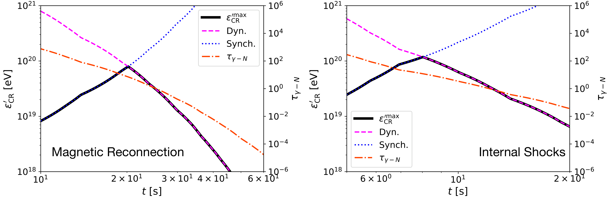 Fig04 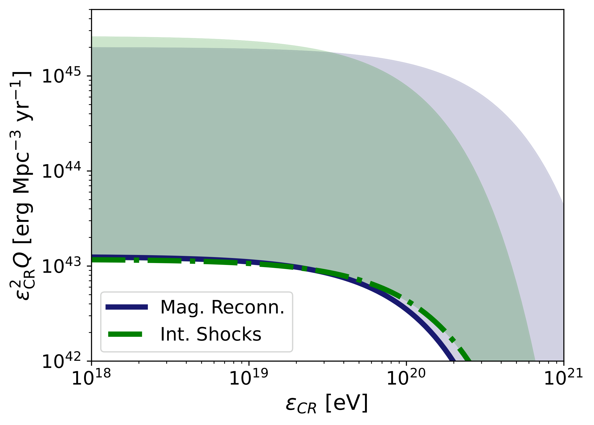
m CR}E_{
m out})，吸积诱导坍缩率为 \(R_{\rm AIC}\)，相对论外流发生比例为 \(f_{\rm j}\)，则模型拟合 / 应用方法
重点章节 / 结果段落怎么读
建议重点查看的图表
关键图表逐图导读
论文原图 / 可嵌入图片
图注：Time evolution of the comoving maximum CR energy $\varepsilon_{\rm CR}^{\prime \rm max}$ that can be achieved in the magnetic reconnection \(\emph{(left)}\) and internal shock \(\emph{(right)}\) scenarios. The number of photon-nuclei interactions are also shown on the right axes for each figure, where we assume the nuclei survives for $\tau_{\gamma - N} \leq 10$.
对应解读：对应“建议重点查看的图表”中的最大能量限制图、时间演化图和核存活诊断，也对应“关键图表逐图导读”的图3。
入选理由：这张图直接给出磁重联与内激波两种情形下宇宙线最大能量随时间的演化，并同时标出光子-核相互作用次数，是判断AIC相对论外流能否把铁族核加速到超高能且避免严重光致裂解的核心证据。相比其他候选图，它最直接支撑论文关于最大能量和重核存活窗口的关键结论。
来源与置信度：\(arxiv_source\)；high；\(arxiv_source\) / main.tex:figure[3]
图注：The contribution of jets originating from AIC of WDs to the UHECR emissivity for pure Fe-like composition for magnetic reconnection and internal shock scenarios (Eq.~\ref{eq:contri}). The solid lines show our estimate with fiducial parameters discussed in the text while the shaded band encapsulates the various uncertainties to show plausible upper limits (see Appendix~\ref{appsec:uncertainty}).
对应解读：对应“建议重点查看的图表”中的能量产生率密度图和与观测需求对比，也对应“关键图表逐图导读”的图4。
入选理由：这张图展示AIC喷流对UHECR发射率的贡献，并区分磁重联和内激波情形，含有基准模型线和不确定性阴影带。它直接检验论文摘要中“几 10^43 到 10^45 erg Mpc^-3 yr^-1”的能量预算是否能覆盖观测需求，是判断源族能否主导UHECR的最重要图之一。
来源与置信度：\(arxiv_source\)；high；\(arxiv_source\) / main.tex:figure[4]
Fig01
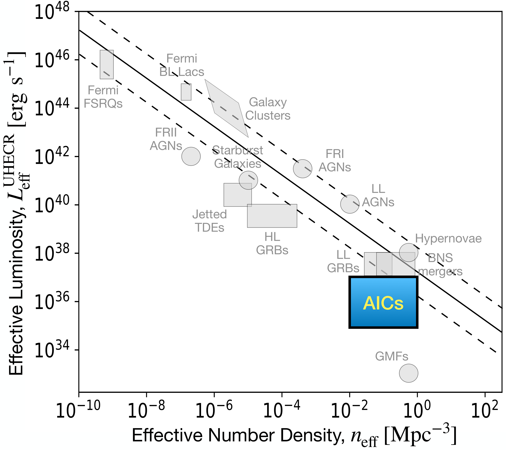
图注：AICs as sources of observed UHECRs on the characteristic source luminosity versus source number density plane (similar to Fig.~11 in~\(\cite{AlvesBatista:2019tlv},\) also see references therein). The diagonal lines depict the requirements to explain the observed UHECRs, under different assumptions of the UHECR luminosity relative to photons.
对应解读：对应“建议重点查看的图表”中的与观测需求对比图，也对应“关键图表逐图导读”的图6类源族比较。
入选理由：该图把AIC源放在特征源光度—源数密度平面上，并用对角线表示解释观测UHECR所需条件，能直观看出AIC相对于其他候选源族是否落在可行区域。它比单纯参数演化图更适合支撑日报中关于源族总体能量预算和事件率约束的讨论。
来源与置信度：\(arxiv_source\)；high；\(arxiv_source\) / main.tex:figure[1]
Fig02
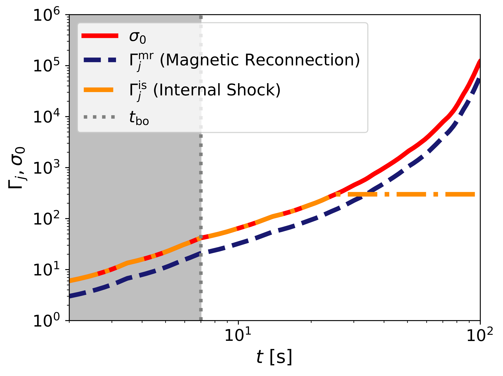
图注：Time evolution of the magnetization $\sigma_0$ (Eq.~\ref{eq:sigma0}) and the terminal bulk Lorentz factor $\Gamma_j$ of the jet for the magnetic reconnection and internal shock scenarios. The breakout time ($t_{\rm bo}$) prior to which $\Gamma_j$ may not reach the terminal value is shaded in gray.
对应解读：对应“建议重点查看的图表”中的时间演化图，以及模型拟合段落中关于Γ、磁化度和喷流物理参数扫描的讨论。
入选理由：图中给出磁化度sigma_0和终端洛伦兹因子Gamma_j随时间的演化，并标出喷流 breakout 前的灰色区域。它说明何时外流真正进入可用于高能加速的相对论阶段，是理解Fig03最大能量时间窗口和两种加速机制差异的重要前置诊断。
来源与置信度：\(arxiv_source\)；high；\(arxiv_source\) / main.tex:figure[2]
Fig06
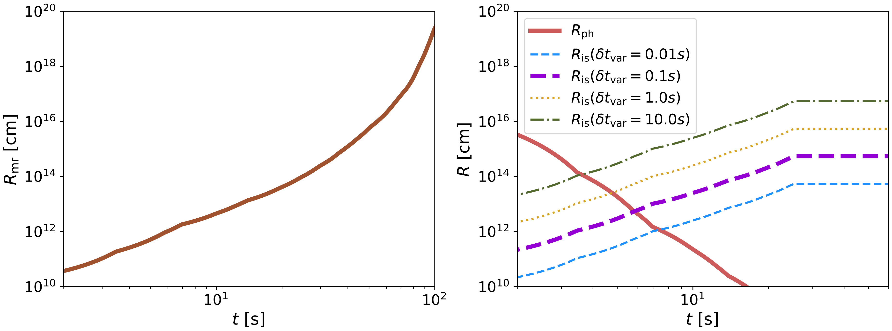
图注：\(\emph{Top: }The\) time evolution of the saturation radius for the magnetic reconnection saturation radius $R_{\rm mr}$ \(\emph{(left)}\) and the internal shock radius $R_{\rm is}$ \(\emph{(right)}\) for different values of $t_j$ along with the photosphere radius $R_{\rm ph}$.
对应解读：对应“建议重点查看的图表”中的外流半径、动力学条件和逃逸窗口检查，也关联模型拟合段落中对耗散半径、光球半径和外流物理不确定性的讨论。
入选理由：该图比较磁重联饱和半径、内激波半径与光球半径的时间演化，可判断加速或耗散发生在光球内外，从而影响光子场强度、核破坏和逃逸条件。它不是最终结论图，但能支撑对Fig03中光致裂解约束来源的物理解释。
来源与置信度：\(arxiv_source\)；high；\(arxiv_source\) / main.tex:figure[6]
Fig07
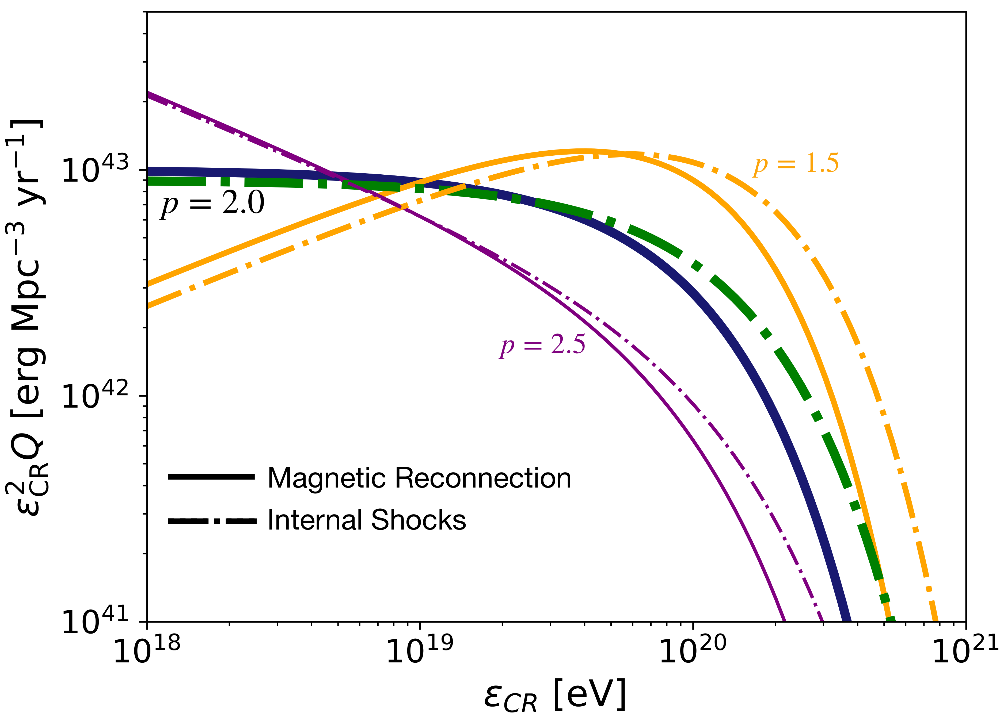
图注：Same as Fig.~\(\ref{fig:res_1}\) but the cases of $p= 1.5$ and $p=2.5$ also shown along with the fiducial $p=2.0$ case.
对应解读：对应模型拟合段落中关于注入谱指数p、能量预算和参数退化的讨论。
入选理由：该图在基准p=2.0之外加入p=1.5和p=2.5情形，能展示注入谱假设对结果的系统影响。它对日报中“较硬或较软注入谱会改变总能量需求”的解读有帮助，但由于caption仅说明是对前一结果的参数扩展，独立科学信息量低于Fig03和Fig04。
来源与置信度：\(arxiv_source\)；high；\(arxiv_source\) / main.tex:figure[7]
强相关工作
这篇工作与新生磁星超高能宇宙线模型关系最紧密。早期模型强调毫秒磁星的巨大开放电势和旋转能，可以自然达到最高能区；后续研究则指出源内辐射场、超新星包层、重核破坏和传播组成会强烈限制可行性。本文的新意在于把前身星通道换成吸积诱导坍缩，使外流环境、事件率和宿主恒星族都不同于普通核心坍缩超新星。建议检索关键词包括 “newborn magnetar ultra-high-energy cosmic rays”、“accretion-induced collapse relativistic outflow”、“heavy nuclei UHECR source” 和 “photodisintegration magnetar wind”。
它也与 Auger 观测给出的高能端偏重组成和能谱压低有关。如果最高能宇宙线确实以中重核为主，源需要提供高最大刚度和足够重核，同时不能在源内完全碎裂。相反观点会强调：吸积诱导坍缩率和相对论外流比例不确定，且若这类源太常见或太近，可能在到达方向或暂现源对应体上留下尚未看到的信号。建议进一步检索 “Pierre Auger composition maximum rigidity”、“UHECR source energetics local rate” 和 “AIC transient constraints”。
相似工作：
- https://arxiv.org/abs/2605.15289
- https://arxiv.org/abs/1806.05672
基础理论 / 方法工作：
- https://ui.adsabs.harvard.edu/abs/1984ARA%26A..22..425H/abstract
- https://doi.org/10.1103/PhysRevLett.16.748
- https://ui.adsabs.harvard.edu/abs/1966JETPL...4...78Z/abstract
相反观点 / 张力线索：
- https://arxiv.org/abs/1708.06592
- https://arxiv.org/abs/1409.5083
2. Entity -- Hardware-agnostic Particle-in-Cell Code for Plasma Astrophysics. III: Higher-order shape functions & generalized field stencils
- 来源：arXiv / astro-ph.HE
- 链接：https://arxiv.org/abs/2605.15260v1
- 作者：Ludwig M. Böss, Arno Vanthieghem, Hayk Hakobyan, Evgeny A. Gorbunov, Damiano Caprioli
- 类型：补充推荐（近期/较早未读，非今日每日论文）
- 评分：novelty 8/10，importance 8/10，relevance 8/10，final 9.00/10
- 推荐理由：Entity PIC代码加入高阶形函数和广义场模板，系统测试电荷守恒、数值加热、能量守恒和Cherenkov噪声抑制；这是等离子体天体物理、冲击/重联和宇宙线加速模拟可复用的方法论文，值得保留。
中文题目：Entity：面向等离子体天体物理的硬件无关 PIC 代码 III——高阶形状函数与广义电磁场差分模板
做了什么：这篇文章为粒子-网格粒子模拟代码 \(\texttt{Entity}\) 加入并系统测试了两类数值改进：高阶粒子形状函数用于电流沉积和场插值，最高支持到 \(11\) 阶；可调的广义电磁场差分模板用于降低数值色散。核心问题不是引入新的天体物理模型，而是让 PIC 模拟中从微小扰动长出来的不稳定性更可信：尽量压低粒子噪声、数值加热和数值切伦科夫辐射，同时保持电荷守恒、能量行为和并行性能可控。作者通过电荷守恒、冷等离子体加热、能量守恒、数值切伦科夫效应和性能伸缩等测试，说明高阶沉积与可调场模板可以在精度、稳定性和计算成本之间提供更好的折中。
为什么重要：许多高能天体物理问题——无碰撞激波、磁重联、相对论喷流、脉冲星磁层、宇宙线加速——依赖 PIC 模拟来跟踪从粒子尺度到集体电磁场的非线性演化。问题在于 PIC 噪声本身也会触发或污染不稳定性；如果数值色散和粒子-网格耦合处理不好，模拟可能产生看似物理的增长、加热或辐射。这篇论文的重要性在于，它把这些误差源作为可定量控制的数值物理问题来处理，而不是只依赖提高分辨率或后处理滤波。
理论 / 观测 / 仪器方法价值：对理论和模拟工作者而言，本文给出的是一套可复现的数值方法基准：高阶形状函数如何影响沉积噪声、能量守恒和性能；广义场模板如何改变电磁波的数值色散关系；二者如何共同抑制相对论漂移等离子体中常见的数值切伦科夫不稳定性。对仪器或观测解释而言，价值间接但很实际：当用 PIC 结果解释非热粒子谱、辐射效率或激波微结构时，数值误差控制决定了这些微观结论能否被当作物理输入。
为什么应该关注：如果你使用或阅读 PIC 模拟，这篇文章值得关注，因为它提醒我们：更高分辨率不总是最经济也不总是最干净的解法。高阶形状函数、守恒电流沉积、可调 Maxwell 求解器和滤波之间存在可优化的组合。对于准备在 GPU、CPU 或混合架构上运行大规模等离子体天体物理模拟的读者，\(\texttt{Entity}\) 的硬件无关实现也提供了一个如何把数值精度设计和性能工程放在同一框架内评估的案例。
展开详细解读：文章讲解、背景、理论、重点章节、图表与相关工作
文章详细讲解
科学问题：PIC 模拟把连续相空间分布用有限数目的宏粒子表示，再通过网格求解电磁场。由于宏粒子数有限，电荷和电流沉积存在采样噪声；由于电磁场在离散网格上推进，光波和等离子波存在数值色散；由于粒子和网格之间反复插值，能量和动量也可能产生非物理交换。对等离子体天体物理尤其麻烦的是，许多目标现象本来就是从小扰动增长起来的，例如 Weibel 不稳定性、两流不稳定性、Bell 不稳定性、重联撕裂模和相对论激波前驱波。如果数值噪声或数值切伦科夫辐射的增长率与真实不稳定性相当，模拟结果就会变得难以解释。
作者怎么做：本文在 \(\texttt{Entity}\) 代码中实现高阶粒子形状函数，用于电流沉积和电磁场插值。所谓高阶形状函数，可以理解为把宏粒子的电荷云在更多网格点上平滑展开，从而降低短波数值噪声；代价是每个粒子需要访问更多网格单元，计算和内存通信成本上升。作者的方案最高支持到 \(11\) 阶精度，并特别强调电流沉积仍要满足离散连续性方程，即沉积出来的 \(\rho\) 与 \(\mathbf{J}\) 不能破坏 Gauss 定律。另外，作者引入广义场差分模板，使 Maxwell 求解器的离散旋度算子不局限于最邻近差分，而可以通过模板系数调节数值色散。
关键结果：测试部分覆盖几个 PIC 代码最容易出问题的诊断。首先是电荷守恒，作者检查高阶沉积后离散 \(\nabla\cdot\mathbf{E}=\rho/\epsilon_0\) 是否保持在机器误差或可接受误差内。其次是数值加热，冷等离子体若在无外部驱动下显著升温，通常意味着粒子噪声或场插值误差过大；高阶形状函数应当能明显降低这种非物理加热。第三是能量守恒，高阶插值和沉积必须避免把粒子能量系统性转移给网格场或反过来。第四是数值切伦科夫效应，这是相对论漂移粒子与离散电磁波色散错误耦合后产生的假不稳定性；广义场模板通过让数值光速在相关波数范围更接近物理光速来抑制它。最后，作者给出高阶沉积的性能伸缩，用来评估高阶方法、较低分辨率和额外电流滤波之间的实际成本。
局限和下一步：本文主要是代码和数值方法论文，因此重点在标准测试，而不是某个具体天体物理场景的最终科学结论。高阶形状函数并不免费：在三维中，支持域随阶数增长，粒子-网格操作可能成为瓶颈，并且在负载不均匀或强 AMR 场景下会放大通信复杂度。广义场模板虽然能调节数值色散，但也可能改变高波数模式的相速度、群速度和稳定边界，因此不同问题需要重新校准。下一步最值得看的，是这些方法在真正的大规模相对论激波、磁重联和湍流级联模拟中，能否在固定计算预算下比传统低阶加滤波方案给出更稳健的粒子谱、辐射诊断和能量分配。
背景知识
PIC 方法是无碰撞等离子体研究中的核心数值工具。它不直接求解完整的六维 Vlasov 方程，而是用大量宏粒子采样分布函数，再在网格上求解 Maxwell 方程。宏粒子沿 Lorentz 力运动，粒子的电荷和电流沉积到网格，网格电磁场再插值回粒子位置。这个闭环能自然描述非热粒子加速、波粒相互作用、各向异性压力和动理学不稳定性，因此在高能天体物理中非常重要。
历史上，PIC 代码的核心挑战一直不是写出基本方程，而是控制离散化误差。最简单的一阶或二阶形状函数实现容易、速度快，但粒子噪声较强；低阶有限差分 Maxwell 求解器也会产生数值色散，使离散电磁波的相速度偏离 \(c\)。在非相对论问题中这些误差有时只是背景噪声，在相对论流、强漂移等离子体和长时间积分中，它们会转化为假加热、假辐射或假不稳定性。
为什么现在值得重新看？一方面，GPU 和异构计算让三维 PIC 模拟的规模大幅扩大，许多论文开始追求更长时间、更大系统尺寸和更真实质量比。系统越大，微小数值误差越可能积累成可见效应；另一方面，现代天文观测对非热粒子谱、辐射效率和瞬变光变提出了更精细要求，模拟不能只给出定性图像。硬件无关代码框架还要求算法既能在不同架构上保持性能，又不能牺牲物理保真度。
这个领域的常见误区之一是把粒子数或网格数简单等同于可信度。提高每个网格的粒子数确实降低统计噪声，但如果 Maxwell 求解器的色散关系错了，或者电流沉积不严格守恒，增加粒子数未必解决问题。另一个误区是把滤波当作万能药：电流滤波能抑制高波数噪声，却也可能抹掉真实的短尺度物理，尤其在冲击前沿、重联扩散区和湍流耗散尺度附近。本文的思路是把高阶形状函数、守恒沉积和可调场模板合并为更系统的误差控制方案。
基础理论 / 方法脉络
从物理图像看，PIC 模拟中的宏粒子不是点电荷的真实集合，而是连续分布函数的采样包。每个宏粒子携带权重、电荷和质量，代表相空间中的一小块分布。为了把粒子信息放到网格上，需要形状函数 \(S\)，它决定粒子的电荷云如何分配到附近网格点。低阶 \(S\) 更局域但噪声大，高阶 \(S\) 更平滑但计算成本更高。
场求解部分通常从 Maxwell 方程出发，在 Yee 网格或类似交错网格上推进 \(\mathbf{E}\) 和 \(\mathbf{B}\)。理想连续真空中电磁波满足 \(\omega=ck\)，但离散差分会把它改成某种 \(\omega_{\rm num}(\mathbf{k})\)。如果 \(\omega_{\rm num}/k\) 在某些方向和波数上小于真实粒子漂移速度，相对论粒子束就可能与本不该共振的数值电磁波发生耦合，形成数值切伦科夫不稳定性。
本文的方法假设可以通过两端同时降噪：粒子端用更高阶的电流沉积和场插值减少 aliasing 与高波数噪声；场端用广义差分模板调整离散旋度算子的 Fourier 符号，使目标波数范围内的数值色散更接近物理色散。这里的关键量包括形状函数阶数、模板系数、网格间距 \(\Delta x\)、时间步长 \(\Delta t\)、Courant 数、每格粒子数和滤波强度。
观测论文通常关心数据残差，而代码论文要看数值诊断残差。本文对应的“观测量”包括离散电荷守恒误差、总能量相对漂移、冷等离子体温度增长率、数值不稳定性的场能增长率以及单步运行时间或强弱伸缩效率。读者应注意退化关系：更高阶形状函数、更高每格粒子数、更细网格和更强滤波都可能降低噪声，但它们对真实短波物理、计算成本和并行通信的影响不同，不能只看一项指标。
系统误差主要来自边界条件、有限盒尺寸、时间步长选择、粒子推进器误差、场求解器色散、沉积和插值不匹配、以及电流滤波后是否仍满足连续性方程。高阶方法尤其要检查是否在多维、非均匀粒子分布和强相对论漂移下仍然稳定，因为一维平滑测试并不能完全代表三维天体物理应用。
公式与推导
PIC 的连续起点是 Vlasov-Maxwell 系统。对粒子种类 \(s\)，分布函数 \(f_s(\mathbf{x},\mathbf{p},t)\) 满足
这里 \(q_s\) 是粒子电荷，\(\mathbf{p}\) 是动量，\(\mathbf{v}\) 是速度。PIC 用有限宏粒子近似这个连续函数，因此数值误差首先来自采样与沉积。
宏粒子表示可写为
其中 \(w_p\) 是宏粒子权重，\(S_x\) 是空间形状函数，\(S_p\) 是动量空间核。实际 PIC 通常只在空间上使用有限宽度的 \(S_x\)，并把动量作为粒子变量推进。高阶形状函数的作用就是让 \(S_x\) 更平滑，降低网格 Nyquist 附近的噪声。
沉积到网格点 \(i\) 的电荷密度可写为
其中 \(\Delta V\) 是网格体积，\(S^{(m)}\) 表示 \(m\) 阶形状函数。阶数 \(m\) 越高，单个粒子的电荷被分配到越宽的 stencil 上，随机粒子噪声在高波数处越低，但每个粒子的内存访问数也增加。
电流沉积必须满足离散连续性方程
这里 \(\nabla_d\) 是离散散度算子，\(\Delta t\) 是时间步长，\(\mathbf{J}^{n+1/2}\) 是半步电流。该式是电荷守恒测试的核心：若它成立，并且初始 Gauss 定律满足，则 Maxwell 推进通常能保持 \(\nabla_d\cdot\mathbf{E}=\rho/\epsilon_0\)。
离散 Maxwell 方程可抽象为
其中 \(c\) 是光速，\(\epsilon_0\) 是真空介电常数。广义场模板的本质是替换 \(\nabla_d\times\) 中的有限差分权重，从而改变其 Fourier 空间符号。
对一维真空波，标准二阶 Yee 格式给出的色散关系近似为
这里 \(\omega\) 是角频率，\(k\) 是波数，\(\Delta x\) 是网格间距。该式显示 \(\omega/k\) 依赖于 \(k\)，高波数电磁波通常传播得不像连续真空波，这正是数值切伦科夫问题的来源之一。
广义模板可以用 Fourier 符号表示为
其中 \(a_\ell\) 是可调差分系数，\(L\) 是模板半宽。调节 \(a_\ell\) 的目标，是让目标范围内的 \(\tilde{k}_{\rm eff}\) 尽量接近真实 \(k\)，或者让数值相速度 \(v_\phi=\omega/k\) 避免与漂移粒子速度 \(v_b\) 发生非物理共振。
粒子束和网格模式的 aliasing 共振可概念化写成
其中 \(\mu\) 与 \(\boldsymbol{\nu}\) 是时间和空间 alias 指数，\(\mathbf{v}_b\) 是漂移速度。数值切伦科夫不稳定性常出现在这个条件附近；高阶形状函数会压低高 \(\boldsymbol{\nu}\) alias 的耦合强度，广义场模板则移动或削弱 \(\omega_{\rm num}\) 的错误交叉。
能量诊断通常看相对漂移
其中 \(\mathcal{E}_{\rm part}\) 是粒子动能加静能的相关定义，\(\mathcal{E}_{\rm field}\) 是电磁场能，\(\mathcal{E}_{\rm tot}(0)\) 是初始总能量。若 \(\delta_E\) 呈系统性增长或与分辨率不收敛，就说明沉积、插值、推进或场求解之间存在能量交换误差。
性能成本可用每粒子每步 stencil 操作数粗略估计为
其中 \(N_p\) 是宏粒子数，\(D\) 是维数，\(m\) 表征形状函数阶数。这个标度解释了为什么本文必须同时讨论性能：在三维中，高阶沉积的成本增长很快，只有当它允许降低粒子数、减少滤波或放宽网格需求时，整体计算才划算。
模型拟合 / 应用方法
这类代码论文没有传统意义上的天体物理参数拟合，但有一套等价的“模型校准”问题：选择形状函数阶数、场模板系数、时间步长、网格分辨率、每格粒子数和滤波设置，使数值诊断满足目标精度。拟合量不是星系质量或谱指数，而是电荷守恒残差、能量漂移、温度增长率、色散曲线误差、不稳定增长率和运行时间。读者可以把这些诊断看成算法参数空间中的目标函数。
若形式化处理，可以定义类似损失函数或似然的指标，例如把不同测试中的归一化误差平方相加：电荷误差、能量误差、色散误差和性能惩罚分别给权重。虽然本文未必采用贝叶斯拟合语言，但实际选择模板系数时，本质上是在约束条件下优化 \(\omega_{\rm num}(\mathbf{k})\) 与物理色散关系的偏差，同时避免破坏稳定性边界。对高阶形状函数，优化问题则是在噪声降低和每步成本上升之间找 Pareto 前沿。
残差诊断要分类型看。电荷守恒残差如果呈随机机器噪声水平，说明沉积与场推进兼容；如果出现空间结构或随时间累积，说明连续性方程被破坏。能量残差若小幅振荡，可能是 leapfrog 型时间推进的正常行为；若单调漂移，则需要警惕数值加热或冷却。冷等离子体温度增长率比单个最终温度更有信息，因为它能区分瞬态初始化误差和长期噪声驱动加热。
退化关系非常关键。增加每格粒子数、提高形状函数阶数、加电流滤波、减小 \(\Delta t\)、提高空间分辨率都能改善某些诊断，但它们不是等价的。滤波可能改变真实小尺度电流；高阶形状函数可能扩大并行 halo 和缓存压力；减小时间步可能提高稳定性但不修正空间色散；增加粒子数降低采样噪声却不能消除 alias 共振。因此比较算法时应固定总计算预算或固定物理误差目标，而不是只比较单次测试的最小误差。
模型可能失败的场景包括极端非均匀密度、强边界注入、移动窗口、局部网格细化、强辐射反作用或量子电动力学扩展等。在这些情况下，高阶 stencil 跨越更多网格点，边界处理和守恒修正会更复杂。实际应用中，建议用与目标问题相近的初值重做小规模收敛测试，例如相对论激波应检查前驱区场谱和粒子谱，磁重联应检查扩散区厚度、能量分配和 plasmoid 统计，而不是只引用通用基准。
重点章节 / 结果段落怎么读
数据和数值框架部分应首先看 \(\texttt{Entity}\) 的算法位置：它如何组织粒子推进、场求解、电流沉积和硬件抽象。读者不必把所有工程细节都读成软件文档，但需要确认高阶沉积与广义场模板是嵌入现有守恒 PIC 循环，而不是外加的后处理平滑。
高阶形状函数和电流沉积方法段是全文的核心之一。这里应重点看形状函数阶数如何定义，沉积 stencil 覆盖多少网格点，电流守恒如何保证，以及场插值是否与沉积使用一致或相容。若沉积和插值阶数不匹配，可能引入额外能量误差；若高阶沉积后再滤波，还要看滤波是否保持连续性方程。
广义场 stencil 方法段是另一个核心。读者应关注模板系数如何选取、优化目标是什么、是否各向同性、是否依赖 Courant 数，以及它对数值色散关系的影响。特别要看作者是否只优化传播轴方向，还是检查了多维斜向传播，因为相对论 PIC 中许多不稳定性并不只沿网格轴发展。
测试结果部分建议按诊断类型阅读：先看电荷守恒和 Gauss 定律残差，确认基本守恒性；再看数值加热和能量守恒，确认长期积分可靠性；然后看数值切伦科夫抑制，判断对相对论应用的意义。每个测试都应注意分辨率、每格粒子数和时间步是否固定，因为这些会影响不同方法的公平比较。
性能和伸缩部分不要跳过。高阶方法的科学优势只有在成本可接受时才有实际价值。读者应检查运行时间如何随阶数、维数、粒子数和硬件后端变化，尤其是沉积操作是否成为瓶颈。最后的讨论部分通常会给出推荐使用场景：哪些问题适合高阶沉积，哪些问题可能用低阶加滤波更经济。
建议重点查看的图表
-
形状函数或 stencil 示意图：应看不同阶数的支持域如何扩大，权重是否平滑，以及多维实现是否简单张量积。关键是理解高阶方法为何降噪、为何更贵。
-
数值色散关系图：应看横轴通常为归一化波数，例如 \(k\Delta x\)，纵轴为 \(\omega\Delta t\)、相速度误差或群速度误差。比较标准 Yee 模板与广义模板在高波数和斜向传播上的偏差。
-
电荷守恒或 Gauss 定律残差图：应看残差是否随时间积累，是否随形状函数阶数变化，以及量级是否接近舍入误差或远低于物理场强。
-
冷等离子体数值加热图：应看温度或动能随时间的增长率，而不只看最终值。高阶形状函数若有效，应显著降低无物理驱动情况下的加热。
-
总能量守恒图：应看粒子能、场能和总能量相对误差。注意区分可逆振荡和系统漂移，也要检查长时间行为。
-
数值切伦科夫测试图：应看电磁场能谱或场能随时间增长率，比较不同场模板和形状函数阶数下假不稳定是否被压低。
-
性能伸缩图或表：应看每步耗时、每秒粒子更新数、强伸缩效率或相对开销如何随阶数增加。关键不是最高阶是否最精确，而是在固定成本下哪种组合最优。
关键图表逐图导读
图 1：若论文给出高阶形状函数或沉积 stencil 示意，横轴通常代表粒子相对网格的位置，纵轴代表分配到相邻网格点的权重。数据点或曲线应显示阶数越高，权重分布越宽且越平滑。读图陷阱是把平滑误认为无条件更物理；它降低网格噪声，但也会平滑接近网格尺度的真实结构，并增加通信成本。
图 2：数值色散图通常以 \(k\Delta x\) 为横轴，以 \(\omega\Delta t\)、\(v_\phi/c\) 或相对误差为纵轴。标准低阶模板的曲线会在高波数偏离连续关系，广义模板应在目标波数范围贴近物理线。读者要看误差是否只在一个传播方向降低；若多维斜向模式没有改善，相对论三维模拟仍可能有残余数值切伦科夫问题。
图 3：电荷守恒诊断图的横轴多为时间步或等离子体频率归一化时间，纵轴为连续性方程残差或 Gauss 定律误差。理想情况下，不同阶数的曲线都应很低，说明高阶沉积没有牺牲守恒性。读图陷阱是只看平均残差；局部最大残差或边界附近残差更能暴露问题。
图 4：数值加热测试图通常显示冷等离子体温度、粒子动能或速度弥散随时间变化。高阶形状函数的曲线应比低阶更平缓。需要注意初始 transient：刚开始的快速调整不一定代表长期加热率，应比较线性增长阶段或长期斜率。
图 5：能量守恒图应分清场能、粒子能和总能量。若粒子能与场能反相振荡而总能量稳定，通常可接受；若总能量相对误差 \(\delta_E\) 单调漂移，则说明算法存在系统性能量误差。读者还应看纵轴是否为线性或对数尺度，以免低估长期漂移。
图 6：数值切伦科夫抑制图可能展示场能谱 \(P(\mathbf{k})\)、总场能随时间或增长率热图。关键是比较标准模板、高阶形状函数和广义模板组合下，沿漂移方向或 alias 共振附近的异常功率是否消失。读图陷阱是把所有高波数功率降低都视为好事；若真实物理也在这些尺度上，应结合解析预期或更高分辨率参考解判断。
图 7：性能图通常以形状函数阶数或节点数为横轴，以耗时、吞吐量或并行效率为纵轴。应看开销是否近似按 stencil 体积增长，是否在高阶时出现内存带宽瓶颈。最重要的读法是把性能图与误差图联合起来：如果 \(7\) 阶比 \(3\) 阶贵很多但误差改善有限，实际生产模拟未必应选最高阶。
论文原图 / 可嵌入图片
Fig11
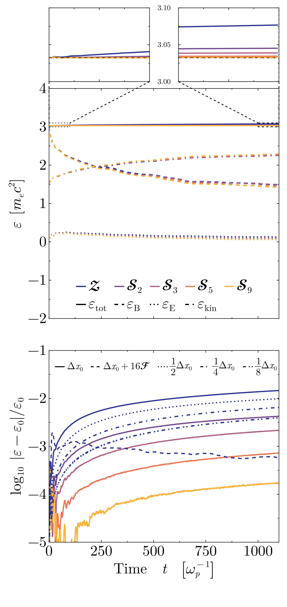
图注：Energy components in the decaying turbulence test as a function of time. The colors refer to \(\zz\) deposit ($\mathcal{Z}$), \(\es\) deposit using 2\nd, 3\rd, 5\thu, and 9\thu~order shape functions ($\mathcal{S}2 -\mathcal{S}_9$). \(\textit{Top panel:}\) Individual energy components for total ($E_\mathrm{tot}$), magnetic ($E_B$), electric ($E_E$) and kinetic ($E_\mathrm{kin}$) energy. The zoom-ins magnify the total energy at the beginning and the end of the simulation. The dashed line indicates $E_\mathrm{tot}$ at the beginning of the simulation. \(\textit{Bottom panel:}\) Relative energy error of the total energy as a function of time. Colors indicate the same runs as in the top panel. For the \(\zz\)~runs we show the default resolution in solid lines, a run at the default resolution with 16 current filter passes in dashed lines, and runs at $2\times$ (dotted), $4\times$ (dash-dotted), and $8\times$ (dash-dot-dotted) the default resolution.
对应解读：对应“建议重点查看的图表”第5项和“关键图表逐图导读”图5：总能量守恒；也支撑模型校准段落中关于能量残差、可逆振荡与系统漂移的讨论。
入选理由：这张图同时给出总能量、磁场能、电场能、粒子动能以及总能量相对误差随时间的演化，并比较不同沉积方案、形状函数阶数、滤波和分辨率，是判断高阶方法是否引入系统性能量漂移的核心证据。相比只给最终误差或单一收敛点的图，它更能直接支撑日报中关于长期能量守恒和误差类型的解读。
来源与置信度：\(arxiv_source\)；high；\(arxiv_source\) / main.tex:figure[11]
Fig05
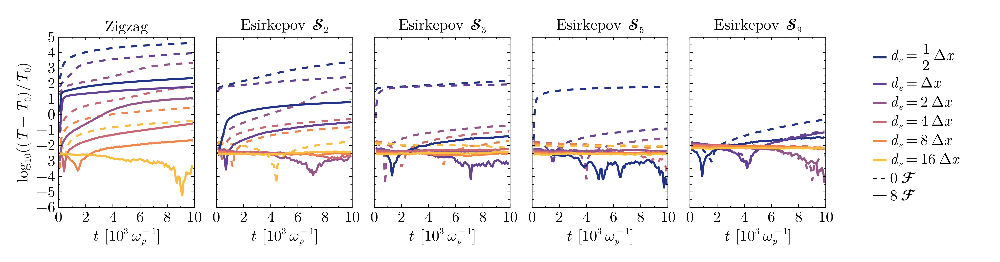
图注：Numerical heating due to unresolved Debye length. The panels show the relative temperature increase over time. Each column shows the runs performed with the respective shape function order. Colors indicate the different resolution levels. Dashed lines indicate runs without current filtering, while solid lines refer to runs with 8 current filter passes.
对应解读：对应“建议重点查看的图表”第4项和“关键图表逐图导读”图4：冷等离子体数值加热；也对应详细解读中高阶形状函数降低无物理驱动加热的关键结果。
入选理由：图中直接展示相对温度增长随时间的变化，并按形状函数阶数、分辨率和电流滤波与否分组，正好用于比较长期加热率而不只是最终温度。它最清楚地体现高阶形状函数与滤波在抑制数值加热方面的效果和代价。
来源与置信度：\(arxiv_source\)；high；\(arxiv_source\) / main.tex:figure[5]
Fig03
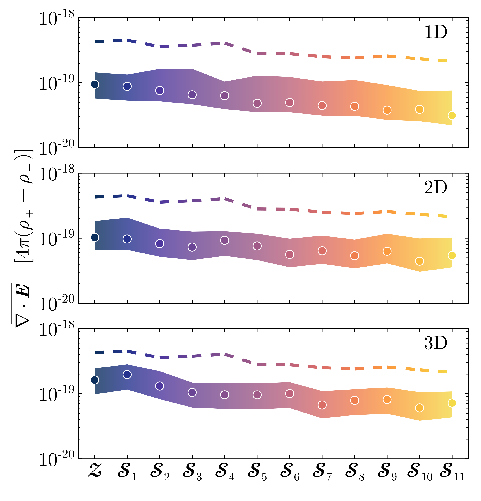
图注：Charge-conservation of an initially neutral plasma at rest. We show the mean value of the total charge density (dots) and its standard deviation (band) over an evolution of $t = 10^5 \: \omega_p^{-1}$. The dashed line indicates the maximum over the course of the simulation.
对应解读：对应“建议重点查看的图表”第3项和“关键图表逐图导读”图3：电荷守恒或 Gauss 定律残差诊断。
入选理由：该图给出初始中性静止等离子体在长时间演化中的总电荷密度均值、标准差带以及最大值，能直接检验高阶沉积是否破坏离散连续性方程。它比一般场图更适合支撑日报中关于残差是否积累、是否接近数值噪声水平的判断。
来源与置信度：\(arxiv_source\)；high；\(arxiv_source\) / main.tex:figure[3]
Fig07
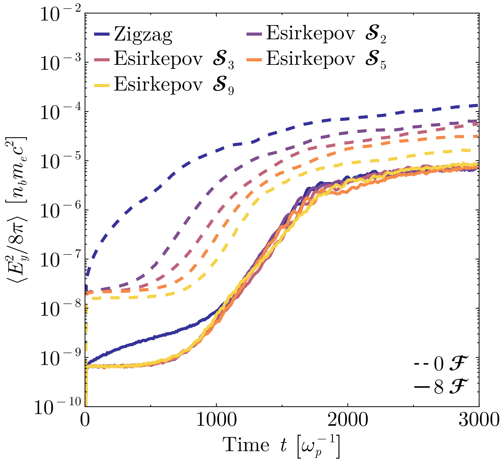
图注：Growth of the $E_y$ component due to a diffuse CR beam propagating through a neutral background plasma. Different colors indicate runs with the different current deposit schemes with various shape function orders. Dashed lines indicate runs without additional current filtering, while solid lines indicate runs with 8 current filter passes.
对应解读：对应“建议重点查看的图表”第6项和“关键图表逐图导读”图6：数值切伦科夫或束流相关假不稳定的增长率诊断。
入选理由：该图显示弥散 cosmic-ray beam 通过背景等离子体时 Ey 分量随时间增长，并比较不同沉积方案、形状函数阶数以及电流滤波。它比单帧场结构图更能量化不稳定增长是否被高阶形状函数和滤波压低，因此更适合支撑关于数值切伦科夫抑制和增长率比较的解读。
来源与置信度：\(arxiv_source\)；high；\(arxiv_source\) / main.tex:figure[7]
Fig01
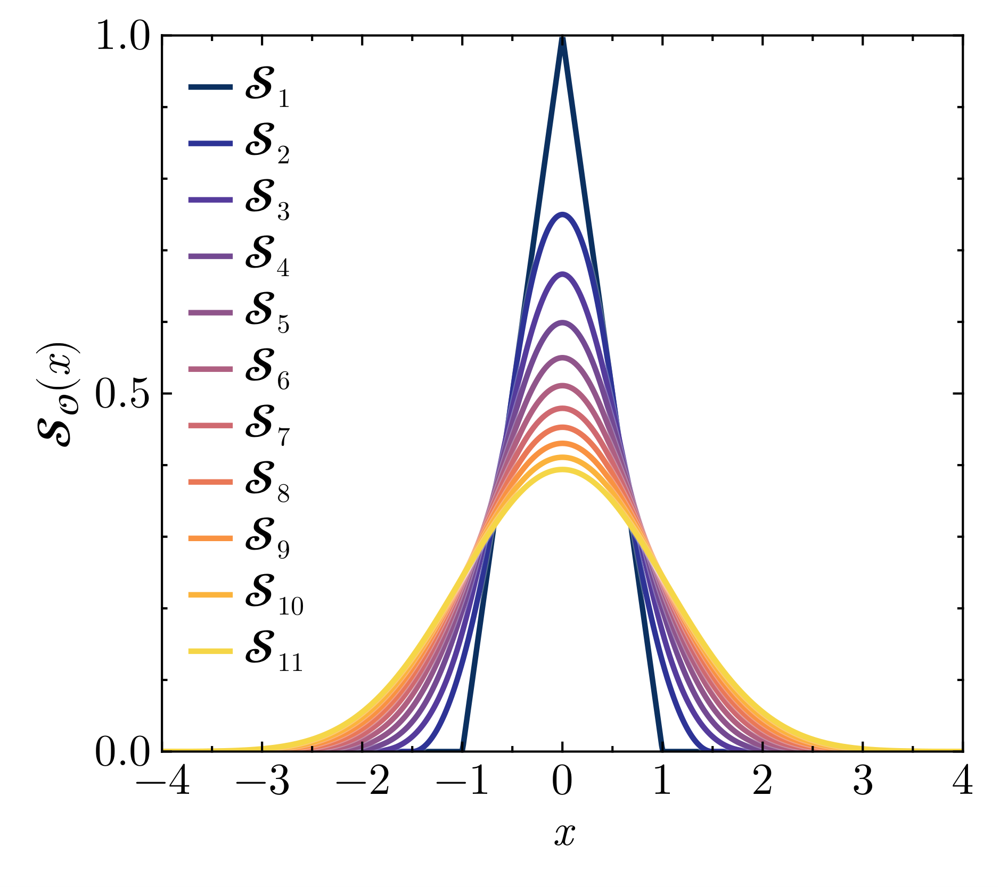
图注：Shape functions $\mathcal{S}_\mathcal{O}$ implemented in \(\entity,\) normalized to the grid-cell size $\Delta x$. The subscripts refer to the leading order $\mathcal{O}$ of the polynomial.
对应解读：对应“建议重点查看的图表”第1项和“关键图表逐图导读”图1：高阶形状函数示意。
入选理由：图中直接展示 Entity 中实现的不同阶形状函数及其相对网格尺度的归一化形状，是理解高阶沉积为何降低网格噪声、同时为何扩大支持域并增加成本的基础图。虽然它不是性能或误差诊断，但对读者理解后续所有阶数比较必不可少。
来源与置信度：\(arxiv_source\)；high；\(arxiv_source\) / main.tex:figure[1]
Fig12
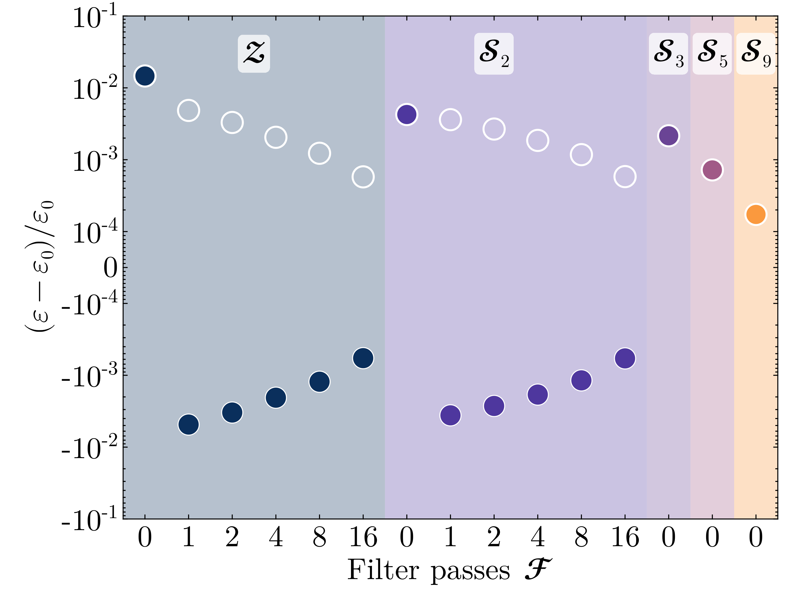
图注：Convergence behavior of energy conservation in the decaying turbulence test. The color of the dots and the band corresponds to the indicated current deposition method. Each dot corresponds to a run with the number of current filter passes shown on the x-axis. Solid dots show the real value of the error, white circles the absolute value.
对应解读：对应模型拟合段落中把能量误差作为算法参数空间目标函数的讨论，并补充“总能量守恒图”关于滤波次数与沉积方法的收敛行为。
入选理由：该图把能量守恒误差随电流滤波次数的变化集中展示出来，可用于评估高阶沉积、传统沉积和滤波之间的退化关系。它的科学价值在于帮助判断误差改善是否来自形状函数本身还是滤波调参，适合作为 Fig11 的收敛和参数选择补充。
来源与置信度：\(arxiv_source\)；high；\(arxiv_source\) / main.tex:figure[12]
强相关工作
这篇工作属于 PIC 数值方法和天体物理代码基础设施谱系，相关工作包括 \(\texttt{TRISTAN-MP}\)、\(\texttt{OSIRIS}\)、\(\texttt{WarpX}\)、\(\texttt{VPIC}\)、\(\texttt{Smilei}\)、\(\texttt{PIConGPU}\) 等代码在守恒沉积、高阶插值、谱 Maxwell 求解器和 GPU 并行方面的发展。建议检索关键词包括 “particle-in-cell charge conserving current deposition”, “higher order particle shape functions PIC”, “numerical Cherenkov instability relativistic PIC”, “finite-difference time-domain dispersion correction PIC”。
与本文存在方法张力的方向主要有两类。第一类是低阶沉积加电流滤波或数字滤波：实现简单、速度快，但可能损伤真实短尺度模式，并且滤波后守恒性需要特别处理。第二类是 pseudo-spectral 或 spectral solver：色散性质通常更好，能强力抑制数值切伦科夫效应，但全局通信成本高，对复杂边界、负载均衡和大规模 GPU 并行并不总是友好。本文的广义有限差分模板可看作在局域 stencil 和色散优化之间的折中方案。
基础理论上，应回到 Birdsall 与 Langdon 的经典 PIC 教材、Esirkepov 的守恒电流沉积方法、Yee 的 FDTD Maxwell 网格，以及 Godfrey 等关于数值切伦科夫不稳定性的分析。若要进一步比较，读者可以在 NASA ADS 或 arXiv 检索 “Esirkepov 2001 exact charge conservation scheme”, “Yee 1966 numerical solution initial boundary value problems Maxwell equations”, “Godfrey numerical Cherenkov instability PIC”。
相似工作：
- https://arxiv.org/abs/2605.15260
- https://arxiv.org/search/?query=particle-in-cell+higher+order+shape+functions+numerical+Cherenkov&searchtype=all
- https://arxiv.org/search/?query=WarpX+PIC+numerical+Cherenkov+high+order+solver&searchtype=all
基础理论 / 方法工作：
- https://doi.org/10.1109/TAP.1966.1138693
- https://doi.org/10.1016/S0010-4655(00)00228-9
- https://ui.adsabs.harvard.edu/search/q=Birdsall%20Langdon%20Plasma%20Physics%20via%20Computer%20Simulation
相反观点 / 张力线索：
- https://arxiv.org/search/?query=pseudo-spectral+analytical+time-domain+PIC+numerical+Cherenkov&searchtype=all
- https://arxiv.org/search/?query=current+filtering+PIC+charge+conservation+numerical+Cherenkov&searchtype=all
3. Bridging X-ray Polarization with Timing & Spectroscopic Parameters of a galactic black hole: Swift J1727.8-1613
- 来源：arXiv / astro-ph.HE
- 链接：https://arxiv.org/abs/2605.15940v1
- 作者：Arka Chatterjee, Sujoy K. Nath, Kaushik Chatterjee, Samar Safi-Harb, Broja G. Dutta, Indranil Chattopadhyay, Sudip K. Garain, Hsiang-Kuang Chang
- 类型：补充推荐（近期/较早未读，非今日每日论文）
- 评分：novelty 7/10，importance 8/10，relevance 8/10，final 8.70/10
- 推荐理由：IXPE结合Insight-HXMT研究黑洞X射线双星Swift J1727.8-1613，报告QPO附近能量依赖时滞与偏振度相关，是X射线偏振-时变-能谱联动的有用观测结果，值得高能天体物理读者关注。
中文题目：Bridging X-ray Polarization with Timing & Spectroscopic Parameters of a galactic black hole: Swift J1727.8-1613
做了什么：本篇论文已通过推荐筛选，但自动详细解读生成失败。可先根据题目和摘要判断阅读优先级：We report the discovery of a correlated energy-dependent time lag and degree of polarization for Swift J1727.8-1613 during its 2023 outburst. The energy-dependent time lag is measured around the type-C quasi-periodic oscillations (QPO) observed by IXPE on 2023-09-07, while the degree of polarization is obtained from energy-resolved polarimetric measurements. The Spearman correlation coefficient was found to be 0.8, with a null hypothesis probability of 4.2\%. Furthermore, the correlation value drops as the quality factor, or Q value, of the observed QPO frequencies decreases. The spectral properties of Swift J1727.8-1613 are analyzed using simultaneous Insight/HXMT data. Thereafter, we present model-independent theoretical arguments to show that processes other than inverse Comptonization also contributes to both the observed polarization and time lags. This correlation may therefore point to additional mechanisms contributing to the connection between the spectral, temporal, and polarimetric properties of black hole binaries in their hard state.
为什么重要：这篇论文在今日候选中通过了本地推荐阈值，说明它与当前高能天体物理兴趣方向或质量标准较匹配；详细内容建议优先查看原文摘要、结论和图表。
理论 / 观测 / 仪器方法价值：由于 LLM 摘要 JSON 解析失败，本节保留为安全占位，不编造论文未确认的公式、图号或链接。
为什么应该关注：日报仍保留这篇论文，是为了避免单篇摘要失败导致整份日报缺失。请把它作为需要人工快速复核的高优先级候选。
展开详细解读：文章讲解、背景、理论、重点章节、图表与相关工作
文章详细讲解
科学问题可以概括为：在黑洞候选体 Swift J1727.8-1613 的硬态/硬中间态爆发阶段，QPO 附近的能量依赖 time lag 是否与 X 射线偏振度在同一能量序列上同步变化？如果是，这种联系是否能由单纯逆康普顿化解释，还是要求额外几何或辐射过程参与？这个问题重要，因为 timing 传统上告诉我们“什么时候”和“以什么频率”辐射区变化，spectroscopy 告诉我们“能量如何分布”，而 polarimetry 则告诉我们“辐射场的方向和几何”。
方法上，作者使用 IXPE 三次观测，先在 2–8 keV 功率谱中识别并拟合 QPO 基频和谐波，得到 centroid frequency、宽度和 Q 值等 timing 参数。对 2023-09-07 的观测，他们围绕 type-C QPO 计算不同能段相对于参考能段的 phase/time lag，并用 PCUBE 等偏振分析方法得到相同能段的 PD 和 PA 置信轮廓。随后将各能段的 lag 与 PD 排序比较，得到 Spearman 相关系数约 0.8，零假设概率约 4.2%。该显著性在天文发现标准中并不算“压倒性”，但作为能量分辨偏振与 QPO timing 的首次联系之一，足够作为后续系统研究的线索。
关键结果包括三层。第一，Fig. 2 左 panel 显示 IXPE 的 PDS 可用宽带噪声加窄 Lorentzian 成分描述，基频和谐波的存在支持 type-C QPO 识别。第二，Fig. 2 中 panel 展示不同能段 PA–PD 的 1σ 轮廓，说明偏振测量并非单个无误差点，而是二维置信区域。第三，Fig. 2 右 panel 直接展示 lag–PD 关系，是摘要相关系数的来源。结合 Fig. 3 的动态 PDS，读者还应检查 QPO 是否在观测期间漂移；如果 QPO 频率漂移未被充分校正，lag 测量可能被峰宽和相干性变化稀释。
光谱部分的作用是给 timing 和 polarimetry 提供物理环境。Fig. 4 使用 IXPE Stokes I 与 Insight/HXMT 2–150 keV 同时谱，模型为 tbabs(diskbb+powerlaw+pexrav)。这能约束盘温、幂律斜率、反射/折返成分等表征参数，进而判断源是否处于硬态以及热电子区和反射贡献是否合理。需要注意的是，该模型并非唯一物理模型；如果未检查 cutoff、relativistic reflection、Comptonization 模型或仪器交叉归一化的影响，就不能把某一个谱参数直接解释为真实几何尺寸。
理论讨论部分通过 Fig. 5 和 Fig. 6 把观测相关性转化为物理问题。Fig. 5 根据论文中的 lag 方程扫描光深、冕半径、电子温度和能量增益等参数，颜色表示正 lag 大小，并把前两次观测的谱参数标在图上。Fig. 6 则把 polarization fraction 与 time lag 联系起来，强调未偏振光子和已有结构化偏振光子在多次散射下可能出现不同的退偏振行为。这支持作者的观点：散射次数增加既可能增加延迟，也可能改变偏振，但关系的符号和斜率取决于初始偏振状态、几何和散射介质结构。
局限性主要有四点。其一，能量分箱数量有限，Spearman p 值约 4.2% 需要谨慎，最好用误差传播和 leave-one-out 检验量化稳健性。其二，IXPE 的有效能段有限，2–8 keV 中反射、盘尾部和幂律成分混合，单一成分解释风险较高。其三，QPO lag 是频率选择后的量，依赖 QPO 峰的拟合、参考能段选择和相干性。其四，PD 的能量趋势可能受背景、调制因子、Stokes I 模型和响应矩阵影响。下一步应做的是对多个 outburst epoch 和更多黑洞双星进行统一分析，并用 joint timing–spectral–polarimetric forward model 直接拟合，而不只是事后相关。
背景知识
Swift J1727.8-1613 是 2023 年银河系黑洞候选体爆发中非常适合做“多信使式 X 射线诊断”的源：它足够亮，使 IXPE 能在 2–8 keV 获得能量分辨偏振，同时又有可由 MAXI/GSC、Insight/HXMT 等仪器跟踪的宽能段光变和能谱。黑洞 X 射线双星在爆发中通常从低硬态、硬中间态、软中间态到高软态演化；硬态/硬中间态里强硬 X 射线幂律、平顶噪声和 type-C QPO 常常同时出现，因此是研究内盘、热冕、喷流底部和相对论进动几何的关键窗口。
这篇论文的核心对象不是单独的偏振度，也不是单独的 QPO，而是二者在能量上的相关：作者报告在 2023-09-07 的 IXPE 观测中，围绕 type-C QPO 测得的能量依赖 time lag 与能量分辨 polarization degree, PD, 存在 Spearman 相关，相关系数约为 0.8，零假设概率约为 4.2%。此外，摘要指出当 QPO 的 quality factor, Q 值下降时，这种相关也减弱。换言之，论文试图把传统的 timing 参数、spectral 参数和新兴的 X 射线 polarimetric 参数放到同一个物理图像中解释。
历史背景上，黑洞 X 射线双星的硬 X 射线通常用热康普顿化解释：冷盘光子进入热电子云，多次散射后能量升高，天然产生 hard lag，即高能光子相对于低能光子滞后。但 type-C QPO 的起源一直存在多种方案，包括 Lense-Thirring 进动的内热流、传播质量吸积率扰动、盘-冕振荡、喷流或冲击结构的调制等。IXPE 加入后，偏振度和偏振角为几何提供了新约束：同样的能谱斜率可能来自不同的散射几何，而这些几何往往给出不同的 PD、PA 以及能量依赖。
本文的动机在于检验一个常被简化的说法：如果 time lag 主要来自逆康普顿化，那么 PD 与 lag 的关系也许只是散射次数或路径长度的副产品。作者进一步提出“模型无关”的论证，认为除逆康普顿化以外的过程也会同时影响偏振和时滞。这里的关键并非否定康普顿化，而是提醒读者：能量依赖 lag、PD、PA、QPO Q 值和宽能段谱参数之间的联合约束，可能指向更复杂的辐射区结构，例如非均匀冕、盘反射、喷流底部、传播扰动或有序磁场相关过程。
阅读时要避免两个常见误区。第一，不应把 Spearman 相关直接理解为因果关系；能段数量有限，误差相关、能量响应、QPO 相干性和共同依赖谱态都可能造成表观相关。第二，不能只看 PD 而忽略 PA–PD 置信轮廓和最小可探测偏振度；在低信噪能段，PD 的正定性、PA 的周期性和 Stokes 参数协方差会显著影响解释。第三，宽能段谱拟合中 tbabs(diskbb+powerlaw+pexrav) 是表征性模型，未必唯一对应真实几何，因此任何“冕半径”“电子温度”“反射贡献”的物理解释都应结合残差、参数退化和替代模型检查。
基础理论 / 方法脉络
黑洞 X 射线双星的硬态辐射可从一个简单图像理解：几何薄、光学厚的冷吸积盘提供软种子光子，盘内侧或盘上方的热电子区将部分软光子逆康普顿散射成硬 X 射线。若高能光子平均经历更多次散射、走过更长路径，便可能在 Fourier 频域中表现为 hard lag。QPO 则是在功率谱中叠加在宽带噪声上的窄峰，type-C QPO 通常具有较高相干性、频率随谱态演化，并常伴随强 rms 变率。
偏振观测提供的是辐射场的方向信息。IXPE 通过调制曲线或 Stokes 参数估计每个能段的线偏振度 PD 和偏振角 PA。对于散射辐射，PD 对几何、倾角、光深、散射次数和入射光场各向异性敏感；对于盘反射或喷流同步辐射，PD 的能量依赖和 PA 取向又会不同。因此，如果同一批能段中 lag 与 PD 同时上升或呈单调关系，就可能说明造成能量延迟的物理过程也在改变辐射方向分布。
本文的观测量可以分为三组。第一组是 timing 量：IXPE 2–8 keV 功率谱、type-C QPO 基频和谐波的 Lorentzian 拟合、Q 值以及围绕 QPO 的能量依赖 time lag。第二组是 polarimetric 量：2–3、3–4、4–5、5–6、6–7、7–8 keV 等能段的 PD、PA 及其置信轮廓。第三组是 spectral 量：IXPE Stokes I 与 Insight/HXMT LE/ME/HE 的同时宽能段能谱，使用 tbabs(diskbb+powerlaw+pexrav) 描述吸收、盘黑体、幂律连续谱和反射/折返成分。
从统计方法看，论文摘要强调 Spearman rank correlation，因为样本点是少数能段，且未必满足线性关系或高斯误差。Spearman 系数更像是“单调相关”的指标，而不是严格物理模型的参数估计。真正需要核查的是：每个能段 lag 和 PD 的误差是否相互独立；相关性是否由最高能或最低能单点驱动；如果用 Monte Carlo 抽样 Stokes 参数和 cross spectrum 误差，相关系数分布是否仍支持非零相关；不同 IXPE epoch 的 QPO Q 值下降时，相关性的减弱是否与 QPO 峰变宽、相干性下降或背景增加一致。
理论解释中的主要退化来自“几何—热力学—传播”三者混合。相同的 lag 可以由更大冕半径、更高散射次数、更低电子温度导致的能量增益较小、或传播扰动速度较慢产生；相同的 PD 可以由更高倾角、更扁平几何、更有序磁场或更强反射贡献产生。因而本文的价值在于提出联合诊断，而不是给出唯一模型。读者应把公式和图 5、图 6 看成参数空间探索和物理可行性测试，而不是已经完成的唯一反演。
公式与推导
可以从 Fourier timing 的基本定义开始。给定软能段和硬能段的光变 $x_s(t)$ 与 $x_h(t)$，其 Fourier 变换为 $X_s(f)$ 和 $X_h(f)$，交叉谱通常写为
这里星号表示复共轭。相位延迟由交叉谱相位给出，
对应的时间延迟为
在本文语境中，$f$ 不是任意频率，而是围绕 type-C QPO 基频或其附近频率窗口平均后的频率；因此 lag 的物理含义依赖 QPO 峰的选择、宽度和相干性。
QPO 峰常用 Lorentzian 描述。若功率谱密度为 $P(f)$，一个中心频率为 $\nu_0$、半宽参数为 $\Delta$ 的 Lorentzian 可写成
其中 $A$ 与该成分积分功率相关。常用质量因子为
高 $Q$ 表示峰更窄、相干性更强；若 $Q$ 降低，围绕 QPO 的相位平均更容易被宽带噪声或频率漂移稀释，这正是检验 lag–PD 相关随 Q 值下降而减弱时必须注意的地方。
逆康普顿化给出一个基本 lag 尺度。若电子云尺度为 $R$、光深为 $\tau$，平均自由程可近似为
或根据具体几何取不同近似；每次散射的时间尺度约为
若从软光子能量 $E_s$ 增益到硬光子能量 $E_h$ 需要 $N$ 次散射，则一个粗略 hard lag 为
这个式子只说明尺度关系，不应被当作精确转移函数；真实 lag 还受传播扰动、反射混响和几何投影影响。
每次热电子散射的平均能量放大因子可用无量纲电子温度 $\Theta_e=kT_e/(m_ec^2)$ 表示。在非相对论到温和相对论热电子近似下，
因此所需散射次数近似为
代回上一式可得缩放关系
其中 $g(\tau)$ 表示与几何和光深有关的有效散射路径因子。Fig. 5 扫描 $R$、$\tau$、$\Theta_e$ 和能量增益时，本质上就是在检验这类缩放是否能覆盖观测 lag。
偏振可用归一化 Stokes 参数描述。设某能段测得 $I,Q,U$，则线偏振度和偏振角为
由于 $p$ 是正定量，低信噪时会有偏置；所以论文中 PA–PD 置信轮廓比单独的最佳值更重要。散射偏振的简单 Thomson 极限给出
其中 $\mu=\cos\theta$，$\theta$ 是散射角。这个公式说明偏振对几何角度极敏感，不能仅由能谱斜率确定。
若把每个能段的 lag 和 PD 组成序列 $\{t_i,p_i\}$，Spearman 相关系数是排序变量的 Pearson 系数：
在无并列且无误差的理想情况下也可写为
其中 $d_i$ 是第 $i$ 个能段在两组排序中的名次差，$n$ 是能段数。本文报告的 $\rho_s\simeq0.8$ 和零假设概率约 $4.2\%$ 应理解为有限能段下的单调性证据；严格检验还应将 $t_i$ 和 $p_i$ 的测量误差通过 Monte Carlo 传播到 $\rho_s$ 分布。
模型拟合 / 应用方法
timing 拟合的核心量是 PDS 中的 Lorentzian 成分。通常模型包含宽带噪声 Lorentzian 或 bending/noise continuum，加上 QPO 基频和可能的谐波窄 Lorentzian。拟合输出包括 centroid frequency $\nu_0$、宽度 FWHM、积分 rms、质量因子 $Q=\nu_0/\mathrm{FWHM}$。诊断时应检查 QPO 峰附近残差是否随机、基频与谐波是否需要同时存在、以及不同能段或不同时间段的 QPO 参数是否一致。若 QPO 峰漂移，单段 PDS 的峰宽会被人为增大，导致 Q 值降低并影响 lag 窗口。
lag 的估计不是普通光变延迟，而是 Fourier 交叉谱在 QPO 频率附近的相位延迟。拟合或测量量包括每个能段相对于参考能段的 phase lag/time lag、误差条和可能的 coherence。这里的系统误差包括参考能段是否包含待测能段导致 correlated noise、QPO 频率窗口选择、背景扣除、死时间效应和相位 wrapping。一个好的诊断是改变参考能段、改变 QPO 积分宽度、分段计算 lag，并检查趋势是否稳定。
偏振拟合通常在 Stokes 空间中完成。PCUBE 给出每个能段的 PD 和 PA，以及 PA–PD 置信轮廓；这些结果等价于对调制曲线或 Stokes $Q,U$ 的似然约束。由于 PD 为正定量，低信噪情况下最佳值会偏高，因此应优先检查 $Q/I$、$U/I$ 的误差椭圆或 PA–PD 二维轮廓。若不同能段的轮廓大幅重叠，声称能量依赖趋势需要更谨慎；若 PA 随能量旋转，也可能意味着多个偏振成分混合，而不只是单一散射区。
谱拟合方面，论文使用 IXPE Stokes I 与 Insight/HXMT LE/ME/HE 的同时数据，模型为 tbabs(diskbb+powerlaw+pexrav)。拟合量包括柱密度或固定吸收、盘温和归一化、幂律 photon index、反射相关参数以及各仪器交叉归一化。残差诊断尤其重要：2–3 keV 附近可能受吸收和校准影响，6–7 keV 可能有铁线/反射结构，20–50 keV 反射 hump 与高能 cutoff 可能与 pexrav 参数退化。若残差显示系统结构，谱参数用于 Fig. 5 理论映射时就应扩大系统误差。
lag–PD 相关的“拟合”更准确地说是相关性检验。Spearman 系数适合小样本单调趋势，但没有直接纳入每个点的二维误差。建议的稳健性诊断包括：对每个能段的 lag 和 Stokes 参数按误差分布抽样，重复计算 $\rho_s$；逐个删除能段做 leave-one-out；比较 Pearson、Kendall 和线性/非线性误差模型；检查相关是否仅由共同的能量单调趋势造成。若 lag 和 PD 都随能量上升，相关本身仍可能真实，但物理因果需要通过模型或对照样本证明。
参数退化是本文解释的最大挑战。更大的冕半径、更高光深、较低电子温度或不同传播速度都可能增加 lag；更扁平的散射几何、更高倾角、更强反射或喷流同步辐射都可能增加 PD。谱模型中的 powerlaw 与 pexrav 分量退化还会影响对散射/反射贡献的判断。因此，理想的下一步不是分别拟合 PDS、偏振和能谱后再相关，而是建立联合 likelihood：同时预测 Stokes $I,Q,U$、能谱和 cross spectrum，并在同一参数空间中约束几何、温度、光深和反射比例。
重点章节 / 结果段落怎么读
-
Introduction 与 source/context 段落：重点找作者如何定位 Swift J1727.8-1613 的 2023 爆发、为什么选择 IXPE 观测日期、以及前人对该源的谱态、QPO 和偏振已有何结论。阅读时记录作者是否明确说明硬态判据，以及他们认为 timing–polarimetry 联合分析能解决什么传统 degeneracy。
-
Observations and data reduction：应细读 IXPE、Insight/HXMT 和 MAXI 数据的筛选、背景处理、能段划分和时间分辨率。对偏振而言，要核查 PCUBE 或等效方法的 Stokes 参数处理、MDP、系统误差；对 timing 而言，要核查 barycentric correction、死时间、背景扣除和参考能段选择。
-
Timing analysis：这是理解相关性的基础。应关注 PDS 的归一化方式、Lorentzian 数量、QPO 基频和谐波的识别标准、Q 值定义、lag 的频率积分窗口、误差估计和相干性。特别要看三次 IXPE 观测的 Q 值如何变化，以及作者如何把 Q 值下降与 lag–PD 相关减弱联系起来。
-
Polarimetric analysis：重点阅读能量分辨 PD/PA 的提取、置信区间构造和不同能段的显著性。由于 PD 正定且 PA 有 $180^\circ$ 周期性，最好优先看 Stokes $Q/I$ 与 $U/I$ 或 PA–PD 轮廓，而不是只看表格最佳值。还应检查作者是否讨论背景偏振、仪器系统误差和能谱模型对偏振结果的影响。
-
Spectral fitting：应把 Fig. 4 与参数表一起读。模型 tbabs(diskbb+powerlaw+pexrav) 给出吸收、盘、幂律和反射的基线描述，但要看 $\chi^2$/dof、残差、交叉归一化和参数置信区间。若论文给出多个 epoch 的谱参数，应比较它们与 QPO 频率、Q 值和 PD/lag 变化是否一致。
-
Discussion and theoretical interpretation：这里应区分“观测事实”“相关性统计”“物理解释”三层。观测事实是能量分辨 lag 与 PD 的测量；统计事实是 Spearman 相关；物理解释则涉及康普顿化、散射退偏振、几何和其他过程。读者应检查作者的模型无关论证是否真的不依赖强几何假设，并记录哪些结论只是建议性的下一步检验。
建议重点查看的图表
-
长期光变与硬度图：检查 MAXI/GSC count rate 随 MJD 的变化、硬度比 4–20 keV/2–4 keV 的颜色编码，以及 IXPE 观测点在爆发轨迹上的位置。重点确认这些 epoch 是否处于硬态或硬中间态，以及样本选择是否偏向 QPO 最强阶段。
-
PDS 与 Lorentzian 分解：检查 2–8 keV 功率谱中宽带噪声、QPO 基频和谐波的拟合是否清楚分离。应看 centroid frequency、FWHM、Q 值、rms、残差以及低频红噪声泄漏；Q 值下降时相关性减弱的说法需要依赖这里的定量拟合。
-
动态 PDS：检查三次 IXPE 观测中 QPO 频率是否随时间漂移、是否有短时消失或分裂。若 QPO 在观测内显著漂移，固定频率窗口计算 lag 会混合不同相位行为，应考虑 shift-and-add 或分段分析。
-
PA–PD 置信轮廓：检查 PCUBE 给出的不同能段 PA 与 PD 的 1σ 轮廓是否相互分离，PA 是否稳定或旋转，PD 是否接近零偏振边界。PD 为正定量，低显著性时必须看二维 Stokes 置信区域而不只是点估计。
-
lag–PD 相关图：检查每个能段点的误差条、能量排序、Spearman 相关是否由少数端点驱动。建议做 leave-one-energy-bin-out、Pearson/Kendall 对照，以及把 lag 和 PD 的联合误差 Monte Carlo 后重新计算相关系数分布。
-
宽能段谱拟合图：检查 IXPE DU1/DU2/DU3 与 Insight/HXMT LE/ME/HE 的交叉归一化、残差结构、铁线/反射 hump、低能吸收和高能 cutoff 是否被模型充分描述。tbabs(diskbb+powerlaw+pexrav) 是有用基线，但要警惕模型过于简化。
-
理论参数空间图：检查 Fig. 5 中 time lag 对光深、冕半径、电子温度和能量增益的敏感方向，以及观测谱参数标记是否落在能产生观测 lag 的合理区域。若颜色梯度很陡，说明小的系统误差即可改变物理判断。
-
polarization fraction–time lag 图：检查 Fig. 6 中曲线或趋势的前提：初始光子是否未偏振，还是带结构化偏振；散射是否均匀、各向同性；退偏振与 lag 的关系是否可被替代几何反转。
关键图表逐图导读
图 1：这是爆发背景图，横轴是 MJD，纵轴是 MAXI/GSC count rate，颜色条表示硬度比 $4-20\,\mathrm{keV}/2-4\,\mathrm{keV}$，圆圈标出 IXPE 观测并说明这些观测具有不同 QPO 特征。读图时先判断 IXPE 点位于爆发上升、峰值还是衰减阶段，再看颜色是否对应硬态/硬中间态。陷阱是不要只凭硬度颜色断言状态；最好结合 PDS 中强宽带噪声和 type-C QPO 共同判断。
图 2：左 panel 是三次 IXPE 观测在 2–8 keV 的 PDS 模型拟合，橙色和绿色虚线分别标出 QPO 基频和谐波 Lorentzian 成分。这里要看峰是否窄、是否显著高于连续噪声、基频和谐波是否稳定，以及拟合残差是否在 QPO 附近有系统结构。中 panel 是 2–3 到 7–8 keV 各能段的 PA–PD 1σ 置信轮廓，重点看轮廓大小、相互重叠和是否靠近 PD=0 边界。右 panel 是全文核心的 lag–PD 相关图，横纵轴分别是 time lag 和 PD；应检查能量点是否按能量单调排列、误差条是否足以削弱相关、最高能点是否单独决定斜率。
图 3：动态 PDS 展示三次 IXPE 观测中功率随时间和频率的分布。横轴和纵轴的具体定义需按图注确认，通常一轴为时间、一轴为频率，颜色表示功率强度。读者应看 QPO 轨迹是否漂移、是否有间歇性增强，以及不同 epoch 的相干性差异。若动态 PDS 显示频率漂移明显，图 2 的单一 Lorentzian 或固定频段 lag 需要额外稳健性检验。
图 4：这是同时宽能段谱拟合图，包含 IXPE 三个 DU 的 Stokes I 2–8 keV 数据，以及 Insight/HXMT LE 2–10 keV、ME 10–35 keV、HE 35–150 keV 数据，模型为 tbabs(diskbb+powerlaw+pexrav)。读图时不只看模型线是否穿过数据点，还要看下方 residual 或 ratio：低能端残差可能提示吸收或 diskbb 不足，中高能残差可能提示 cutoff 或反射 hump 处理不充分，仪器间跳变可能提示交叉校准问题。陷阱是把 phenomenological powerlaw+pexrav 的参数直接当作唯一冕几何。
图 5：这是理论参数空间图，颜色条表示正 time lag 大小，panel (a) 扫描光深 $\tau$ 和冕半径 $R$，panel (b) 扫描 $R$ 和电子温度 $\Theta_E$，panel (c) 与 panel (d) 则展示固定部分参数后的 lag 变化或能量增益影响。圆圈标出前两次观测的谱参数位置。读者应看观测点是否处于平滑可解释区域，还是靠近颜色急变或模型边界；后者意味着小的参数误差会导致 lag 解释大幅变化。
图 6：该图把 polarization fraction 画成 time lag 的函数，用于解释散射次数、退偏振和结构化初始偏振之间的关系。若初始光子未偏振，少量散射可能产生偏振，而多次散射也可能在复杂几何下退偏振；若初始光子已有结构化偏振，多次散射可能更容易破坏其有序性。读图陷阱是把曲线当成普适定律；它更像是说明不同初始条件下 lag 与 PD 可能同源但非唯一对应。
论文原图 / 可嵌入图片
Fig02
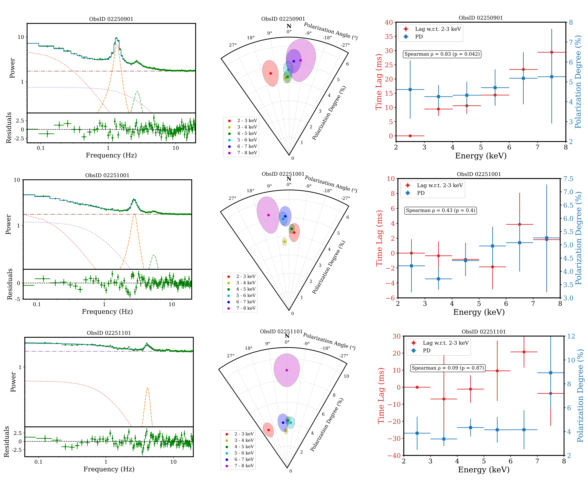
图注：Left panel: Model fitted Power Density Spectra (PDS) in the $2-8$ keV energy band for the three {\(\it\) IXPE} observations. The narrow Lorentzians corresponding to the QPO fundamental and harmonic peaks are shown in orange and green dotted lines, respectively. Middle panel: Confidence contours between PA and PD as obtained from the PCUBE algorithm in the $2-3$, $3-4$, $4-5$, $5-6$, $6-7$, and $7-8$ keV energy bands. The shaded contours represent $1\sigma$ confidence intervals. Right panel: Correlation between time lag and PD in the $2-3$, $3-4$, $4-5$, $5-6$, $6-7$, and $7-8$ keV energy bands.
对应解读：对应摘要核心结果与“建议重点查看的图表”中主要数据、参数约束和相关性诊断：QPO附近能量依赖时滞、能量分辨偏振度以及二者相关性。
入选理由：这是全文最关键的综合图：左 panel 给出IXPE三次观测的2–8 keV功率谱拟合及QPO基频/谐波Lorentzian成分，中 panel 给出不同能段PA–PD的1σ置信轮廓，右 panel 直接展示 time lag 与 PD 的能量分辨相关性，正是论文声称发现Spearman相关的主要观测证据。
来源与置信度：\(arxiv_source\)；high；\(arxiv_source\) / \(pol_lag.tex\):figure[2]
Fig04
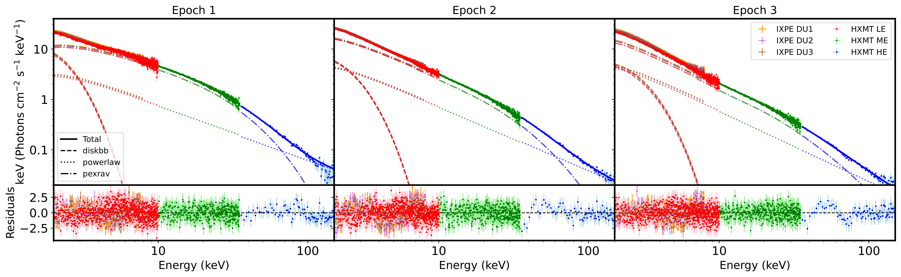
图注：Simultaneous spectral fit of \(\textit{IXPE}\) Stokes \(\textit{I}\) spectra in $2-8$ keV (DU 1 in orange, DU 2 in purple, DU 3 in brown) and the three \(\textit{Insight}/HXMT\) instruments (LE: $2–10$ keV in red, ME: $10–35$ keV in green, and HE: $35–150$ keV in blue) with \(\qcr{tbabs(diskbb+powerlaw+pexrav)}\) model for the three epochs.
对应解读：对应“模型拟合”段落应重点检查的宽能段谱拟合、模型组成和残差/系统误差诊断。
入选理由：该图展示IXPE Stokes I与Insight/HXMT LE/ME/HE的同时宽能段谱拟合，模型为tbabs(diskbb+powerlaw+pexrav)，覆盖2–150 keV，是连接偏振/时变结果与光谱参数的核心依据。
来源与置信度：\(arxiv_source\)；high；\(arxiv_source\) / \(pol_lag.tex\):figure[4]
Fig05
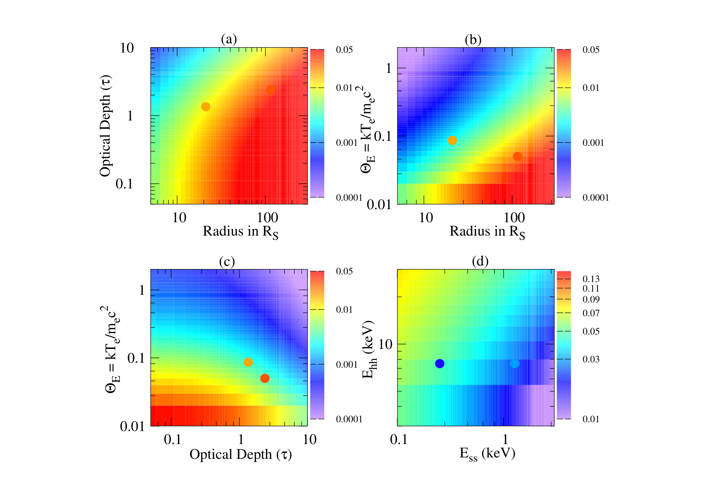
图注：Based on the equation \(\ref{eq:lag},\) the parameter spaces of the thermodynamic variables contributing to the time lag are explored. The colorbar represents the positive lag magnitude. Panel (a) shows the time-lag map for optical depth $\tau$ and coronal radius ($R$) variation. Other parameters, such as $E_{hh}=100.0$ keV, $E_{ss}=1.0$ keV, and $\Theta= 0.05$ are considered. Panel (b) represents the lag parameter space of coronal radius ($R$) and electron temperature ($\Theta_E$) keeping $\tau =0.05$, $E_{hh}=100.0$ keV, and $E_{ss}=1.0$ keV. Panel (c) shows the variation of time lag with respect to $\tau =0.05$ and $R=40~R_g$ considering $\tau =0.05$, $E_{hh}=100.0$ keV, and $E_{ss}=1.0$ keV. Lastly, panel (d) presents time lag for the energy enhancement considering $\tau =0.05$, $R=40~R_g$, and $\Theta_E = 0.5$. $\odot$ symbols represent the spectral parameters from the first two observations.
对应解读：对应理论解释和模型比较：探索产生正时滞的热力学参数空间，包括光深、冕区半径、电子温度和能量增益。
入选理由：该图把观测时滞与理论参数空间联系起来，并用颜色条表示正时滞大小，包含观测谱参数标记，有助于判断逆康普顿化及其他机制是否能解释观测到的lag–polarization联系。
来源与置信度：\(arxiv_source\)；high；\(arxiv_source\) / \(pol_lag.tex\):figure[5]
Fig06
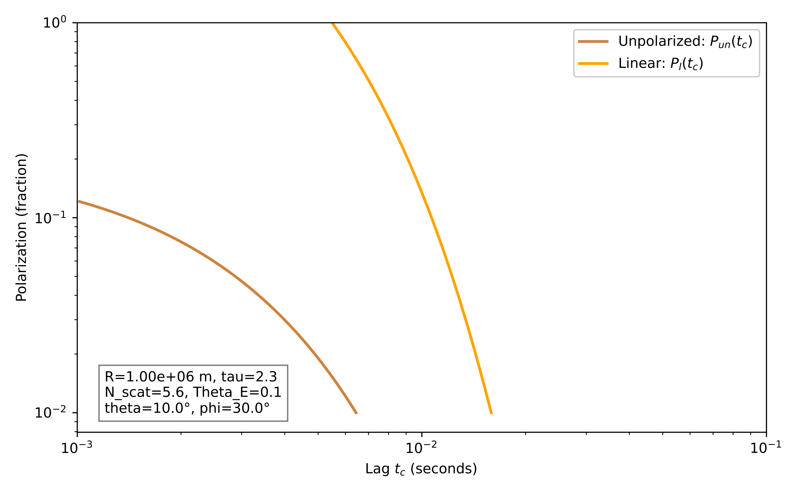
图注：Polarization fraction is plotted as a function of time lag. The initially unpolarized photons are more likely to become depolarized with small time lags (fewer scatterings), whereas photons with structured polarization require many scatterings to become depolarized.
对应解读：对应论文关于偏振分数与时滞物理联系的模型无关解释。
入选理由：该图直接画出 polarization fraction 随 time lag 的变化，用于说明散射次数、退偏振和结构化偏振之间的关系，是理解作者提出‘除逆康普顿化外还需其他过程’这一物理解释的重要图。
来源与置信度：\(arxiv_source\)；high；\(arxiv_source\) / \(pol_lag.tex\):figure[6]
Fig01
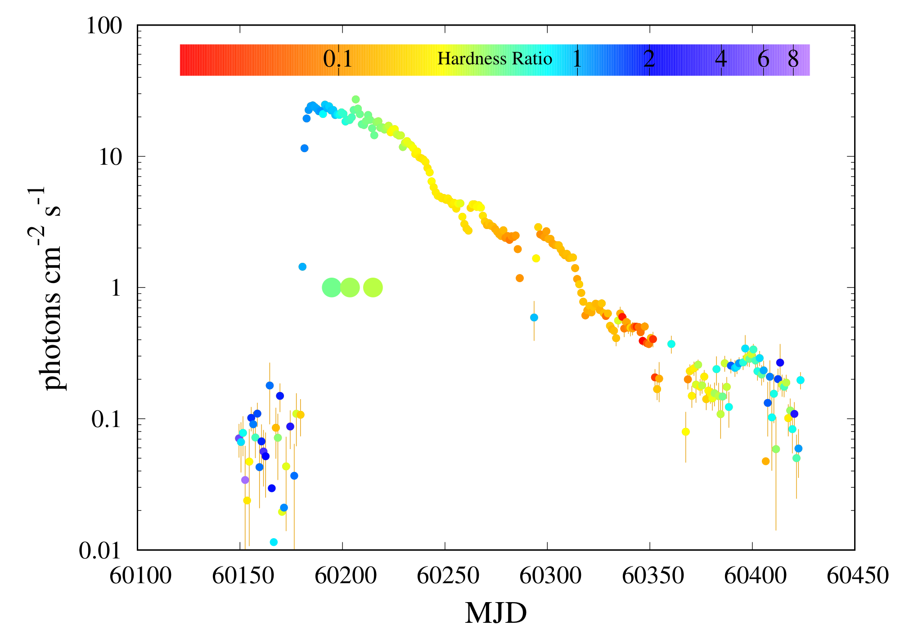
图注：MAXI/GSC count rate is plotted with the MJD. Colorbar represents the hardness ratio ($4-20$ keV/$2-4$ keV) of GSC. $\odot$ symbols represent the {\(\it\) IXPE} observations with distinct QPO features over time.
对应解读：对应观测背景和样本选择：2023爆发期间MAXI/GSC光变、硬度比以及IXPE观测时段。
入选理由：该图提供源在爆发过程中的长期演化位置和硬度状态，并标出具有不同QPO特征的IXPE观测，对判断样本处于硬态及为何选择这些epoch很有帮助。
来源与置信度：\(arxiv_source\)；high；\(arxiv_source\) / \(pol_lag.tex\):figure[1]
Fig03

图注：Dynamic PDS of the three {\(\it\) IXPE} observations are presented.
对应解读：对应时变分析中QPO随时间演化的诊断图。
入选理由：动态PDS补充展示三次IXPE观测中QPO结构的时间稳定性和演化，可辅助理解论文提到相关性随Q值降低而减弱，但相较Fig02的定量PDS拟合和相关性图，信息更偏辅助。
来源与置信度：\(arxiv_source\)；high；\(arxiv_source\) / \(pol_lag.tex\):figure[3]
强相关工作
相似工作应从三个关键词链检索：IXPE black hole X-ray binary polarization、type-C QPO phase/time lag、Swift J1727.8-1613 2023 outburst。第一类文献包括 IXPE 对 Cyg X-1、MAXI J1820+070、4U 1630-47 以及其他黑洞候选体的偏振测量，这些工作提供硬态/软态偏振度、偏振角和几何解释的参照。第二类文献是 RXTE、NICER、AstroSat、Insight/HXMT 等对 type-C QPO 的频率演化、rms、相位 lag 和能量依赖研究，它们构成本文 timing 分析的基础。
基础工作方面，应回到热康普顿化、散射偏振和 QPO 模型三条线。康普顿化基础包括 Sunyaev-Titarchuk 型热电子云能谱与 lag 尺度；散射偏振基础包括 Chandrasekhar 辐射转移、Thomson/Compton 散射导致的线偏振；QPO 基础包括传播扰动模型、Lense-Thirring 进动模型以及内热流几何调制模型。这些基础工作帮助判断本文中 Fig. 5 的参数扫描是否只是在复现康普顿化尺度，还是确实需要额外过程。
张力或相反线索可从“lag 不完全由康普顿化解释”和“偏振不唯一指示冕几何”两方面检索。一些黑洞双星显示 soft lag、反射混响 lag、或随 QPO 相位变化的能谱/偏振行为，这些现象可能与简单多次散射 hard lag 图像冲突。另一些研究指出，盘反射、喷流底部同步辐射、非均匀热流和相对论光线弯曲都能改变 PD 和 PA，因此即使观测到 lag–PD 相关，也未必唯一支持某个冕模型。
具体到本文，建议沿论文 bibliography 查找三类直接前身：一是 Swift J1727.8-1613 爆发期间的多波段发现和谱态分类论文；二是同源或相似黑洞暂现源的 IXPE 偏振论文；三是将 QPO timing 与偏振或相位分辨谱联系起来的理论/模拟论文。阅读这些相关工作时，要特别比较能段划分、QPO 频率范围、偏振显著性、样本 epoch 和统计检验方法，因为这些技术差异可能解释不同论文之间看似矛盾的物理结论。
相似工作：
（未提供）
基础理论 / 方法工作：
（未提供）
相反观点 / 张力线索：
（未提供）